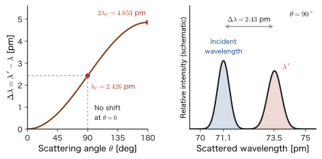
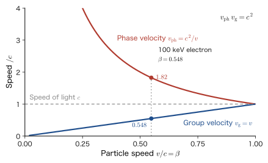
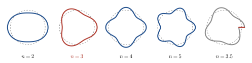

Chapter 6Compton Scattering and Matter Waves — From the Photon's Momentum to de Broglie's Hypothesis and Electron Diffraction
Light has two faces: that of a wave and that of a particle (the photon). In the preceding chapters we confirmed the photon energy $E=h\nu$ through the photoelectric effect, and we learned about the discrete levels of the atom from Bohr's model. But does the photon carry not only energy but also momentum? Can massless light strike its target, like a billiard ball, and knock the target away? In 1923, Compton directed X-rays at carbon and found that the wavelength of the scattered X-rays is longer than the wavelength of the incident X-rays. In the classical theory of electromagnetic waves, there is no reason for the wavelength to change. Yet if we regard the X-rays as “particles with energy $h\nu$ and momentum $h/\lambda$” and let them collide with electrons, the observed change in wavelength is explained exactly. This is decisive experimental evidence that the photon has momentum.
If light is “both a wave and a particle,” then, conversely, might a particle such as the electron also be “a wave”? This is the bold hypothesis that de Broglie put forward in 1924. A particle of momentum $p$ is accompanied by a wave of wavelength $\lambda=h/p$. Calculating the wavelength of an electron accelerated through 100 V gives about $0.12\ \mathrm{nm}$, which is of the same order as the interatomic spacing in a crystal. Therefore, if electrons are directed at a crystal, diffraction should occur, just as with X-rays. In 1927 Davisson and Germer, and also G. P. Thomson, actually observed it, and the existence of matter waves was confirmed by experiment. This wave nature of the electron is now the foundation of the tools for investigating the structure of materials at the atomic scale, such as the electron microscope, low-energy electron diffraction, and neutron diffraction.
In this chapter we derive Compton scattering without skipping a single line, connect de Broglie's hypothesis to concrete calculations of the wavelength of the electron (including unit conversion and the relativistic correction), and see that Bohr's quantum condition can be read as a standing-wave condition. Finally, we introduce diffraction experiments and applications. In classical physics (AD 03, “Introductory University Physics”), waves (light, sound) and particles (balls, electrons) were separate kinds of things. Here, a single relation $p=h/\lambda$ connecting the momentum $p$ and the wavelength $\lambda$ joins the two into one. In addition, at the end of this chapter we answer the question left over from Chapter 2: “What is $\lambda$ in the de Broglie relation the wavelength of?”
- To understand the momentum of the photon $p=h/\lambda=\hbar k$ through the experimental facts of Compton scattering, the derivation of $\Delta\lambda=\dfrac{h}{m_{\mathrm e}c}(1-\cos\theta)$ from conservation of energy and conservation of momentum, and the Compton wavelength $\lambda_{\mathrm C}=2.426\ \mathrm{pm}$. To be able to calculate the energy of the recoil electron and the Compton edge
- The meaning of the de Broglie relations $\lambda=h/p$, $E=\hbar\omega$, $p=\hbar k$; the difference between the phase velocity $c^2/v$ and the group velocity $v$; and the magnitude of matter-wave wavelengths (from a baseball to the electron, the neutron, and $\mathrm{C_{60}}$)
- To derive the wavelength $\lambda[\mathrm{nm}]=1.2264/\sqrt{V[\mathrm{V}]}$ of an electron at accelerating voltage $V$, including the unit conversion; and that a relativistic correction is needed at high voltages (electron microscopes)
- That Bohr's quantum condition $m_{\mathrm e}vr=n\hbar$ follows from the standing-wave condition $2\pi r=n\lambda$ for a circular orbit, and that the quantization of levels can be understood from standing waves in a box
- To compare the wavelength of the electron with experiment, using the Davisson–Germer experiment ($54\ \mathrm{V}$, $50^\circ$, $D\sin\varphi=n\lambda$) and the Debye–Scherrer rings of G. P. Thomson ($R=L\tan2\theta$)
- How matter waves are used in the resolution of the electron microscope, in LEED and RHEED, and in neutron diffraction; and that $\lambda=2\pi/k$ for the plane wave $e^{ikx}$ is the de Broglie wavelength (the answer to the question in Chapter 2)
Source notes: Yasuhide Mochizuki, “Physics Notes: Quantum Mechanics 1,” p. 13, and “Physics Notes: Quantum Mechanics 2,” p. 1.
6.1 Evidence for the Photon's Momentum — Compton Scattering (1923)
6.1.1 Photon energy and momentum — revisiting the Planck–Einstein relation
First, let us review the relation, introduced in Chapter 4 (Section 4.4), that connects photons and electromagnetic waves. We distinguish quantities relating to the light quantum (photon) by the subscript $\mathrm{ph}$, and quantities relating to the corresponding electromagnetic radiation (electromagnetic wave) by the subscript $\mathrm{em}$. Let the frequency of the electromagnetic wave be $\nu_{\mathrm{em}}$, its wavelength $\lambda_{\mathrm{em}}$, and its angular frequency $\omega_{\mathrm{em}}=2\pi\nu_{\mathrm{em}}$, and let the magnitude of its wavevector $\bm{k}_{\mathrm{em}}$ (which points in the direction in which the wave travels and gives the amount by which the phase advances per unit length; its unit is rad/m) be $k_{\mathrm{em}}=\abs{\bm{k}_{\mathrm{em}}}=2\pi/\lambda_{\mathrm{em}}$. Here $\hbar$ (h-bar) is $h/2\pi$.
Law 6.1: The Planck–Einstein relation (a restatement of Law 4.3)
The photon energy $E_{\mathrm{ph}}$ and the magnitude of the momentum $p_{\mathrm{ph}}$ are expressed in terms of the frequency, wavelength, and wavenumber of the corresponding electromagnetic wave as follows.
\begin{align} E_{\mathrm{ph}}&=h\nu_{\mathrm{em}}=\hbar\omega_{\mathrm{em}} \qquad(\because\ \omega_{\mathrm{em}}=2\pi\nu_{\mathrm{em}},\ \ \hbar=\frac{h}{2\pi}) \label{eq:6-planck}\\ p_{\mathrm{ph}}&=\frac{h\nu_{\mathrm{em}}}{c}=\frac{h\nu_{\mathrm{em}}}{\lambda_{\mathrm{em}}\nu_{\mathrm{em}}}=\frac{h}{\lambda_{\mathrm{em}}}=\hbar k_{\mathrm{em}} \qquad(\because\ k_{\mathrm{em}}=\frac{2\pi}{\lambda_{\mathrm{em}}}) \label{eq:6-pphoton} \end{align}Since momentum is a vector, including its direction we have $\bm{p}_{\mathrm{ph}}=\hbar\bm{k}_{\mathrm{em}}$ (the direction of the photon's momentum is the direction in which the electromagnetic wave travels).
The first step of Eq. \eqref{eq:6-pphoton}, $p_{\mathrm{ph}}=E_{\mathrm{ph}}/c$, can be derived in two ways, from Maxwell's radiation pressure and from relativity (Section 4.4.2). The second and later steps consist of rewriting with the basic wave relation $c=\lambda_{\mathrm{em}}\nu_{\mathrm{em}}$ and canceling $\nu_{\mathrm{em}}$, and then $h/\lambda_{\mathrm{em}}=\dfrac{h}{2\pi}\cdot\dfrac{2\pi}{\lambda_{\mathrm{em}}}=\hbar k_{\mathrm{em}}$. These two equations form a “dictionary” that relates the wave quantities $(\nu,\lambda)$ to the particle quantities $(E,p)$.
6.1.2 Light has momentum — the momentum of massless light
Although the photon has no rest mass, it has momentum $p=h/\lambda$. That light carries momentum was known even before Compton's experiment (next section), from the radiation pressure of Maxwell's electromagnetism (the momentum of an electromagnetic wave, $P=U/c$). Strictly speaking, substituting $m=0$ into the relativistic relation $E^2=(pc)^2+(mc^2)^2$ (Introductory University Physics, Chapter 57, Section 57.5 (in Japanese)) gives $p=E/c$. The derivation, including the meaning and limitations of the manipulation $p=mc^2/c=E/c$, was given in Chapter 4, Section 4.4.2.
The momentum of a photon is very small. For a photon of visible light with wavelength $550\ \mathrm{nm}$, $p=h/\lambda=(6.626\times10^{-34}\ \mathrm{J\,s})/(550\times10^{-9}\ \mathrm{m})=1.2\times10^{-27}\ \mathrm{kg\,m/s}$. In contrast, for an X-ray photon of wavelength $71.1\ \mathrm{pm}$ ($=7.11\times10^{-11}\ \mathrm{m}$), $p=9.3\times10^{-24}\ \mathrm{kg\,m/s}$, which is about $7.7\times10^{3}$ times larger. Since momentum is inversely proportional to wavelength, the effect of momentum is easy to see for short-wavelength X-rays and $\gamma$-rays. This is why X-rays were used in Compton's experiment in the next section.
6.1.3 Compton's experiment (1923)
Compton directed monochromatic X-rays (the Mo $\mathrm{K}\alpha$ line, wavelength $71.1\ \mathrm{pm}$) at a graphite (carbon) target and measured the wavelength of the X-rays scattered at various angles $\theta$ with a spectroscope that used Bragg reflection from a crystal (Introductory University Physics, Chapter 16, Section 16.7). The results were as follows.
- Two lines appear in the scattered X-rays: a component with the same wavelength $\lambda$ as the incident X-rays, and a component with a longer wavelength $\lambda'$.
- The wavelength shift $\Delta\lambda=\lambda'-\lambda$ of the longer-wavelength component is larger the larger the scattering angle $\theta$ is. At $\theta=0$ there is no shift.
- This shift depends neither on the wavelength $\lambda$ of the incident X-rays nor on the material of the scatterer.
Classical electromagnetic theory cannot explain this. This is because, if we suppose that the electric field of the incident electromagnetic wave makes the electrons oscillate at the same frequency as the incident wave, and that the oscillating electrons radiate electromagnetic waves of that same frequency (Thomson scattering, a name that honors J. J. Thomson, the discoverer of the electron), then the wavelength of the scattered wave should be the same as that of the incident wave. The appearance of a component with a longer wavelength cannot be understood from the picture “light is a wave” alone.
Compton (and, independently, Debye) therefore regarded the X-rays as photons with energy $E=hc/\lambda$ and momentum $p=h/\lambda$, and supposed that these undergo an elastic collision with a free electron at rest. If the photon gives part of its energy and momentum to the electron, the energy of the scattered photon decreases and its wavelength becomes longer. In the next subsection we solve this collision from three equations in all: one for conservation of energy and two for the components of conservation of momentum (along the incident direction and perpendicular to it). Compton received the Nobel Prize in 1927 for this achievement.
6.1.4 Collision of a photon with a free electron — derivation of the Compton formula
We set up the collision. Before the scattering, the electron is at rest (energy $m_{\mathrm e}c^2$, momentum $0$), and the incident photon has wavelength $\lambda$ (energy $hc/\lambda$, momentum $h/\lambda$, directed along the positive $x$ axis). After the scattering, the photon has wavelength $\lambda'$ and travels at an angle $\theta$ from the incident direction, and the electron, with momentum $p_{\mathrm e}$, flies off at an angle $\varphi$ on the opposite side of the incident direction (Figure 6.1). In this chapter we use $\varphi$ for two different quantities: in this section (Section 6.1) it is the recoil angle of the electron in Compton scattering, and in Section 6.5 it is the diffraction angle in the Davisson–Germer experiment (it is not used in the sense of the azimuthal angle of spherical coordinates). When the photon energy is large, as for $\gamma$-rays, the electron recoils at a speed close to the speed of light (even for X-rays it reaches a few percent of the speed of light). To obtain a result that is valid in both cases, we therefore express the energy of the electron by the relativistic formula $E_{\mathrm e}=\sqrt{(p_{\mathrm e}c)^2+(m_{\mathrm e}c^2)^2}$ (Introductory University Physics, Chapter 57, Section 57.5 (in Japanese)). There are three unknowns, $\lambda'$, $p_{\mathrm e}$, and $\varphi$, and three conditions: conservation of momentum (two equations, for the $x$ and $y$ components) and conservation of energy (one equation).
Derivation: The Compton formula $\Delta\lambda=\dfrac{h}{m_{\mathrm e}c}(1-\cos\theta)$
[i] Conservation of momentum. We write the $x$ component (the incident direction) and the $y$ component (the direction perpendicular to it) separately.
\begin{align} \frac{h}{\lambda}&=\frac{h}{\lambda'}\cos\theta+p_{\mathrm e}\cos\varphi \label{eq:6-cons-x}\\ 0&=\frac{h}{\lambda'}\sin\theta-p_{\mathrm e}\sin\varphi \label{eq:6-cons-y} \end{align}Here $\varphi$ is the unknown we want to eliminate. We therefore rewrite the equations so that the terms containing $\cos\varphi$ and $\sin\varphi$ remain on the left-hand side:
$$ p_{\mathrm e}\cos\varphi=\frac{h}{\lambda}-\frac{h}{\lambda'}\cos\theta,\qquad p_{\mathrm e}\sin\varphi=\frac{h}{\lambda'}\sin\theta $$Squaring both sides and adding the two equations side by side, the left-hand side becomes $p_{\mathrm e}^2$ because $\cos^2\varphi+\sin^2\varphi=1$. Expanding the square of the right-hand side of the first equation, we obtain
$$ p_{\mathrm e}^2=\frac{h^2}{\lambda^2}-\frac{2h^2}{\lambda\lambda'}\cos\theta+\frac{h^2}{\lambda'^2}\cos^2\theta+\frac{h^2}{\lambda'^2}\sin^2\theta =\frac{h^2}{\lambda^2}+\frac{h^2}{\lambda'^2}-\frac{2h^2\cos\theta}{\lambda\lambda'} $$(In the last step we used $\cos^2\theta+\sin^2\theta=1$.) To match the units of the energy equation, we multiply both sides by $c^2$:
\begin{equation} p_{\mathrm e}^2c^2=(hc)^2\left[\frac{1}{\lambda^2}+\frac{1}{\lambda'^2}-\frac{2\cos\theta}{\lambda\lambda'}\right] \label{eq:6-pe2} \end{equation}[ii] Conservation of energy. The energy before the scattering is the sum of the photon energy $hc/\lambda$ and the energy $m_{\mathrm e}c^2$ of the electron at rest; after the scattering it is the sum of the photon energy $hc/\lambda'$ and the electron energy $E_{\mathrm e}$.
$$ \frac{hc}{\lambda}+m_{\mathrm e}c^2=\frac{hc}{\lambda'}+E_{\mathrm e},\qquad E_{\mathrm e}^2=p_{\mathrm e}^2c^2+m_{\mathrm e}^2c^4 $$To eliminate $E_{\mathrm e}$, we move $\dfrac{hc}{\lambda'}$ to the left-hand side and square:
$$ \left(\frac{hc}{\lambda}-\frac{hc}{\lambda'}+m_{\mathrm e}c^2\right)^2=p_{\mathrm e}^2c^2+m_{\mathrm e}^2c^4 $$Expanding the left-hand side using $(a+b)^2=a^2+2ab+b^2$ (with $a=hc/\lambda-hc/\lambda'$ and $b=m_{\mathrm e}c^2$) and canceling $m_{\mathrm e}^2c^4$ on both sides, we obtain
\begin{equation} (hc)^2\left(\frac{1}{\lambda}-\frac{1}{\lambda'}\right)^2+2m_{\mathrm e}c^2\cdot hc\left(\frac{1}{\lambda}-\frac{1}{\lambda'}\right)=p_{\mathrm e}^2c^2 \label{eq:6-econs} \end{equation}[iii] Elimination of $p_{\mathrm e}$. Substitute Eq. \eqref{eq:6-pe2} into the right-hand side of Eq. \eqref{eq:6-econs}. Of the left-hand side's $\left(\dfrac{1}{\lambda}-\dfrac{1}{\lambda'}\right)^2=\dfrac{1}{\lambda^2}-\dfrac{2}{\lambda\lambda'}+\dfrac{1}{\lambda'^2}$, the terms $\dfrac{1}{\lambda^2}$ and $\dfrac{1}{\lambda'^2}$ are the same as on the right-hand side and cancel each other, so the remainder becomes
$$ -\frac{2(hc)^2}{\lambda\lambda'}+2m_{\mathrm e}c^2\cdot hc\left(\frac{1}{\lambda}-\frac{1}{\lambda'}\right)=-\frac{2(hc)^2\cos\theta}{\lambda\lambda'} $$Writing $\dfrac{1}{\lambda}-\dfrac{1}{\lambda'}=\dfrac{\lambda'-\lambda}{\lambda\lambda'}$ and multiplying both sides by $\dfrac{\lambda\lambda'}{2hc^2}$, we obtain
$$ -h+m_{\mathrm e}c\,(\lambda'-\lambda)=-h\cos\theta $$Solving for $\lambda'-\lambda$, we find
\begin{equation} \Delta\lambda\equiv\lambda'-\lambda=\frac{h}{m_{\mathrm e}c}(1-\cos\theta) \label{eq:6-compton} \end{equation}∎
Theorem 6.1: Compton's formula
When a photon of wavelength $\lambda$ is scattered by a free electron at rest and travels in a direction making an angle $\theta$ with the incident direction, the wavelength $\lambda'$ of the scattered photon satisfies
\begin{equation} \lambda'-\lambda=\lambda_{\mathrm C}\,(1-\cos\theta)=2\lambda_{\mathrm C}\sin^2\frac{\theta}{2},\qquad \lambda_{\mathrm C}\equiv\frac{h}{m_{\mathrm e}c}=2.426\,310\,238\,67\times10^{-12}\ \mathrm{m}\approx2.426\ \mathrm{pm} \label{eq:6-comptonC} \end{equation}Here $\lambda_{\mathrm C}$ is called the Compton wavelength of the electron. The change in wavelength $\Delta\lambda$ is determined by $\theta$ alone and does not depend on the wavelength $\lambda$ of the incident photon.
The second equality is the half-angle formula $1-\cos\theta=2\sin^2(\theta/2)$. Let us check the dimensions. The unit of $h/(m_{\mathrm e}c)$ is $\dfrac{\mathrm{J\,s}}{\mathrm{kg}\cdot\mathrm{m/s}}=\dfrac{\mathrm{kg\,m^2/s}}{\mathrm{kg\,m/s}}=\mathrm{m}$, which is indeed a length. The numerical value is $\lambda_{\mathrm C}=\dfrac{6.626\,070\,15\times10^{-34}}{9.109\,383\,7015\times10^{-31}\times2.997\,924\,58\times10^{8}}\ \mathrm{m}=2.4263\times10^{-12}\ \mathrm{m}$.
Meaning of the Compton wavelength. When the photon energy $hc/\lambda$ is exactly equal to the rest energy of the electron, $m_{\mathrm e}c^2=0.511\ \mathrm{MeV}$, its wavelength is $\lambda=hc/(m_{\mathrm e}c^2)=h/(m_{\mathrm e}c)=\lambda_{\mathrm C}$. In other words, $\lambda_{\mathrm C}$ is “the wavelength of a photon corresponding to the mass of the electron,” and when the wavelength of the photon becomes comparable to $\lambda_{\mathrm C}$, the energy of the photon changes substantially in a collision with an electron. Note that $\hbar/(m_{\mathrm e}c)=0.386\ \mathrm{pm}$, which is $\lambda_{\mathrm C}$ divided by $2\pi$, is also sometimes called the (reduced) Compton wavelength.
Direction of the recoil electron. Taking the ratio of Eqs. \eqref{eq:6-cons-x} and \eqref{eq:6-cons-y} also gives the angle $\varphi$ at which the electron is ejected. We have $\tan\varphi=\dfrac{p_{\mathrm e}\sin\varphi}{p_{\mathrm e}\cos\varphi}=\dfrac{(h/\lambda')\sin\theta}{h/\lambda-(h/\lambda')\cos\theta}=\dfrac{\sin\theta}{\lambda'/\lambda-\cos\theta}$, and substituting $\lambda'/\lambda=1+\dfrac{\lambda_{\mathrm C}}{\lambda}(1-\cos\theta)$ makes the denominator $(1-\cos\theta)\left(1+\dfrac{\lambda_{\mathrm C}}{\lambda}\right)$. Using $\dfrac{\sin\theta}{1-\cos\theta}=\cot\dfrac{\theta}{2}$, we obtain
\begin{equation} \tan\varphi=\frac{\cot(\theta/2)}{1+\lambda_{\mathrm C}/\lambda} \label{eq:6-tanphi} \end{equation}When the wavelength of the incident photon is long ($\lambda\gg\lambda_{\mathrm C}$), $\tan\varphi\approx\cot(\theta/2)$, that is, $\varphi\approx90^\circ-\theta/2$.
6.1.5 Properties of the Compton shift — what is observed and what is hard to observe
Let us read Eq. \eqref{eq:6-comptonC} angle by angle (Figure 6.2 (left)).
- $\theta=0$ (forward; the case in which the photon passes by without touching the electron): $\Delta\lambda=0$. The wavelength does not change.
- $\theta=90^\circ$: since $\cos90^\circ=0$, $\Delta\lambda=\lambda_{\mathrm C}=2.426\ \mathrm{pm}$.
- $\theta=180^\circ$ (scattering straight backward): since $\cos180^\circ=-1$, $\Delta\lambda=2\lambda_{\mathrm C}=4.853\ \mathrm{pm}$. This is the maximum.
The values of $\Delta\lambda$ are all within a few picometers, regardless of the wavelength $\lambda$ of the incident photon. Therefore whether the shift in wavelength is visible is determined by the “fractional shift $\Delta\lambda/\lambda$.” The maximum fractional shift is $2\lambda_{\mathrm C}/\lambda$. For visible light of wavelength $550\ \mathrm{nm}$, $2\lambda_{\mathrm C}/\lambda=8.8\times10^{-6}$; that is, the wavelength changes by only about 9 parts per million, which cannot be observed with an ordinary spectroscope. On the other hand, for X-rays with $\lambda=71.1\ \mathrm{pm}$ the wavelength changes by as much as $6.8\ \%$ at most. This is why Compton used X-rays; in the scattering of visible light, the effect that “the photon, carrying momentum, knocks the electron away” is simply not visible as a change in wavelength.

Energy of the recoil electron. By conservation of energy, the kinetic energy $T=E_{\mathrm e}-m_{\mathrm e}c^2$ gained by the electron equals the energy lost by the photon (in this chapter, to match the relativistic formula $E=T+m_{\mathrm e}c^2$, we write the kinetic energy as $T$ rather than the $K$ of Chapters 4 and 5; temperature is written in the form $k_{\mathrm B}T$ to distinguish the two):
\begin{equation} T=\frac{hc}{\lambda}-\frac{hc}{\lambda'}=\frac{hc\,\Delta\lambda}{\lambda\lambda'} \label{eq:6-Trecoil} \end{equation}Writing the photon energy as $E=hc/\lambda$ and the energy of the scattered photon as $E'=hc/\lambda'$, and multiplying both sides of Eq. \eqref{eq:6-comptonC} by $1/(hc)$ (note that $\lambda_{\mathrm C}/(hc)=1/(m_{\mathrm e}c^2)$), we obtain $\dfrac{1}{E'}=\dfrac{1}{E}+\dfrac{1-\cos\theta}{m_{\mathrm e}c^2}$, that is,
\begin{equation} E'=\frac{E}{1+\varepsilon(1-\cos\theta)},\qquad \varepsilon\equiv\frac{E}{m_{\mathrm e}c^2} \label{eq:6-Eprime} \end{equation}Here $\varepsilon$ is the dimensionless quantity obtained by dividing the energy of the incident photon by the rest energy of the electron. $E'$ is smallest at $\theta=180^\circ$, and then the energy gained by the electron is largest:
\begin{equation} T_{\max}=E-E'_{\min}=E\,\frac{2\varepsilon}{1+2\varepsilon}=\frac{2E^2}{2E+m_{\mathrm e}c^2} \label{eq:6-Tmax} \end{equation}For $E\ll m_{\mathrm e}c^2$ (visible light or soft X-rays), $T_{\max}\approx2E^2/(m_{\mathrm e}c^2)$ is small, whereas for $\gamma$-rays, for which $E$ is large, most of the photon's energy is handed to the electron.
Example 6.1: Compton scattering of the Mo K$\alpha$ line
X-rays of wavelength $\lambda=71.1\ \mathrm{pm}$ are scattered by a free electron and travel in the direction $\theta=90^\circ$. Find (1) the wavelength $\lambda'$ of the scattered X-rays, (2) the kinetic energy $T$ of the recoil electron, and (3) the ejection angle $\varphi$ of the recoil electron.
Solution. (1) In Eq. \eqref{eq:6-comptonC}, $\cos90^\circ=0$, so $\Delta\lambda=\lambda_{\mathrm C}=2.426\ \mathrm{pm}$. Hence $\lambda'=71.1+2.426=73.53\ \mathrm{pm}$.
(2) We compute Eq. \eqref{eq:6-Trecoil} using $hc=1239.84\ \mathrm{eV\,nm}$. Expressing all lengths in nm, we have $\lambda=0.0711\ \mathrm{nm}$, $\lambda'=0.073526\ \mathrm{nm}$, and $\Delta\lambda=0.002426\ \mathrm{nm}$.
$$ T=\frac{hc\,\Delta\lambda}{\lambda\lambda'}=\frac{1239.84\ \mathrm{eV\,nm}\times0.002426\ \mathrm{nm}}{0.0711\ \mathrm{nm}\times0.073526\ \mathrm{nm}}=\frac{3.0083\ \mathrm{eV\,nm^2}}{5.2277\times10^{-3}\ \mathrm{nm^2}}=575\ \mathrm{eV} $$Of the incident photon energy $hc/\lambda=1239.84/0.0711=17.44\ \mathrm{keV}$, only $0.575\ \mathrm{keV}$ (about $3.3\ \%$) is transferred to the electron. The speed of the electron is $v=\sqrt{2T/m_{\mathrm e}}\approx0.05c$, much smaller than the speed of light.
(3) In Eq. \eqref{eq:6-tanphi}, $\cot45^\circ=1$ and $\lambda_{\mathrm C}/\lambda=2.426/71.1=0.03412$, so $\tan\varphi=\dfrac{1}{1.03412}=0.9670$, that is, $\varphi=44.0^\circ$ (the electron is ejected at about $44^\circ$ from the incident direction, on the side opposite to the photon).
Example 6.2: Visible light and X-rays, and the Compton edge for the $\gamma$-rays of Cs-137
(1) For visible light of wavelength $550\ \mathrm{nm}$ and X-rays of wavelength $71.1\ \mathrm{pm}$, find the maximum value of the fractional change in wavelength $\Delta\lambda/\lambda$ due to Compton scattering, and explain why it is difficult to observe for visible light. (2) Find the maximum energy that the $\gamma$-rays emitted by $^{137}\mathrm{Cs}$ (energy $662\ \mathrm{keV}$) can give to an electron (the Compton edge), and the energy of the photon backscattered in that case. Take $m_{\mathrm e}c^2=511.0\ \mathrm{keV}$.
Solution. (1) The maximum value of $\Delta\lambda$ is $2\lambda_{\mathrm C}=4.853\ \mathrm{pm}$. For visible light it gives $\dfrac{4.853\times10^{-12}\ \mathrm{m}}{550\times10^{-9}\ \mathrm{m}}=8.8\times10^{-6}$, and for X-rays $\dfrac{4.853\ \mathrm{pm}}{71.1\ \mathrm{pm}}=0.068=6.8\ \%$. Since the wavelength of visible light changes only by a fraction of the order of $10^{-5}$, the difference between the wavelengths of the incident and scattered light cannot be seen at the resolution of an ordinary spectroscope.
(2) We have $\varepsilon=E/(m_{\mathrm e}c^2)=662/511.0=1.2955$. By Eq. \eqref{eq:6-Eprime}, the energy of the backscattered photon ($\theta=180^\circ$, $1-\cos\theta=2$) is
$$ E'=\frac{662\ \mathrm{keV}}{1+2\times1.2955}=\frac{662\ \mathrm{keV}}{3.5910}=184.3\ \mathrm{keV} $$By conservation of energy, the energy gained by the electron is $T_{\max}=662-184.3=477.7\ \mathrm{keV}$. This also agrees with $2E^2/(2E+m_{\mathrm e}c^2)=2\times662^2/(2\times662+511.0)=876\,488/1835.0=477.7\ \mathrm{keV}$ from Eq. \eqref{eq:6-Tmax}. When $\gamma$-rays are measured with a scintillation detector or the like, in addition to the photopeak ($662\ \mathrm{keV}$), at which the entire energy of the photon is absorbed, a continuous portion appears in which only the energy of the electron is recorded when the photon has escaped from the detector after Compton scattering, and its upper limit forms a sharp edge (the Compton edge) at $477.7\ \mathrm{keV}$. (The exact energy of this $\gamma$-ray is $661.66\ \mathrm{keV}$, and the corresponding Compton edge is $477.3\ \mathrm{keV}$.)
6.1.6 What is the component whose wavelength does not change?
In Compton's experiment, in addition to the component on the longer-wavelength side (the Compton-shifted component), a component with the same wavelength as the incident radiation also appeared (Figure 6.2 (right)). This component corresponds to scattering in which the electron is strongly bound to the atom and the photon makes the whole atom recoil. Since the mass of the collision partner merely changes from $m_{\mathrm e}$ to the mass $M$ of the atom, it suffices to replace $m_{\mathrm e}$ in Eq. \eqref{eq:6-comptonC} by $M$. The mass of a carbon atom is about $2.2\times10^4$ times that of the electron (obtained by dividing $12\ \mathrm{u}=12\times1.6605\times10^{-27}\ \mathrm{kg}=1.99\times10^{-26}\ \mathrm{kg}$ by $m_{\mathrm e}=9.109\times10^{-31}\ \mathrm{kg}$), so the wavelength shift is $2.4\ \mathrm{pm}/(2.2\times10^{4})=1.1\times10^{-4}\ \mathrm{pm}$ at $\theta=90^\circ$ and even at the maximum, $\theta=180^\circ$, is only $2.2\times10^{-4}\ \mathrm{pm}$, which escapes observation. In this way a component with the same wavelength remains.
Application: Measuring the momentum distribution of electrons by Compton scattering
Electrons in a real solid are not at rest, so the wavelengths of the scattered X-rays and $\gamma$-rays are spread around the value given by Eq. \eqref{eq:6-comptonC} (the same principle as the Doppler effect). The shape of this spread (the Compton profile) reflects the momentum distribution of the electrons in the material. It is used in materials research as an experimental technique for investigating the Fermi surface and the momentum distribution of electronic states. In addition, the kinematics of Compton scattering (Eq. \eqref{eq:6-Eprime}) is fundamental in $\gamma$-ray detection for medical and industrial use and in nondestructive testing using radiation.
Discussion: The conservation laws hold in each individual collision
The question “Might energy conservation and momentum conservation hold only on average over many collisions?” was seriously debated at the time. In 1925, Bothe and Geiger, using the coincidence method, and Compton and Simon, using a cloud chamber, investigated the relation between the scattered photon and the recoil electron. They confirmed that in a single collision the photon and the electron appear simultaneously, and that energy and momentum are conserved. The particle picture, in which the photon hands momentum and energy to the electron in each individual collision, was thus supported by experiment.
In AD 03, the kinematics of Compton scattering is derived briefly using the conservation law of four-momentum (Introductory University Physics, Chapter 57, Section 57.9 (in Japanese)). When energy and momentum are combined into a single four-vector, the three equations of this section merge into one, and the same result, Eq. \eqref{eq:6-compton}, follows. The scattering cross section (how much is scattered into which angle) is given by the formula (the Klein–Nishina formula) that Klein and Yoshio Nishina obtained in 1929 using Dirac's relativistic theory of the electron; it became one of the first applications of quantum electrodynamics (QED), but it goes beyond the scope of this book (Elementary Particle Physics (AD 09) (in Japanese)).
6.2 de Broglie's Hypothesis (1924) — Particles Are Also Waves
6.2.1 From the duality of light to the duality of matter
Compton scattering confirmed that light is “a wave that is also a particle with energy $E=h\nu$ and momentum $p=h/\lambda$.” The wave quantities (frequency $\nu$, wavelength $\lambda$) and the particle quantities (energy $E$, momentum $p$) are linked through the Planck constant $h$ (Law 6.1).
In 1924, the Frenchman de Broglie argued as follows in his doctoral thesis. If nature is built symmetrically, then this relation should not be special to light but should also hold for massive particles such as electrons. In other words, if the electron has the properties of a wave, then $p=h/\lambda$ should hold for the electron as well.
Law 6.2: The de Broglie relation (the matter-wave hypothesis)
A free particle (an electron, neutron, atom, molecule, etc.) with momentum $\bm{p}$ and energy $E$ is accompanied by a plane wave with the following wavelength, wavenumber, and frequency.
\begin{equation} \lambda=\frac{h}{p},\qquad \bm{p}=\hbar\bm{k}\ \ \left(k=\frac{2\pi}{\lambda}\right),\qquad E=h\nu=\hbar\omega \label{eq:6-debroglie} \end{equation}This wave is called a matter wave or a de Broglie wave, and $\lambda$ is called the de Broglie wavelength.
Eq. \eqref{eq:6-debroglie} has exactly the same form as Eqs. \eqref{eq:6-planck} and \eqref{eq:6-pphoton} for the photon. The difference is that for light $\lambda$ was the wavelength of an electromagnetic wave, whereas here we give the momentum $p$ of a particle and define the wavelength of the “wave accompanying the particle.” If the magnitude of the momentum is $p=\abs{\bm{p}}=mv$ (for a nonrelativistic particle), then $\lambda=h/(mv)$.
Note that the $E$ in $E=h\nu=\hbar\omega$ is, in relativity, the total energy $E=\gamma mc^2$, which includes the rest energy $mc^2$ (Section 6.2.2). In the nonrelativistic approximation we often use only the kinetic energy $p^2/2m$. Which one we use shifts the origin of the angular frequency $\omega$ and so changes the value of the phase velocity, but the wavelength $\lambda=h/p$ does not change (see the Caution in Section 6.2.2).
Intuition: Reading the relations for light in the opposite direction
In Compton scattering, we read a “wave of wavelength $\lambda$” as a “particle of momentum $h/\lambda$.” de Broglie's hypothesis reads this in the opposite direction. That is, it reads a “particle of momentum $p$” as a “wave of wavelength $h/p$.” The larger the momentum, the shorter the wavelength, and the smaller the momentum, the longer the wavelength. The objects of our everyday life have momenta that are larger by many orders of magnitude (their masses are large), so their wavelengths are extremely short and their wave nature cannot be seen. Because the electron has a small mass, it behaves as a wave whose wavelength is of the order of the interatomic spacing, as we will see in Section 6.2.3.
This hypothesis was put forward without experimental support. However, de Broglie himself predicted that a stream of electrons passing through a small hole or a crystal should show diffraction, just as light does. This was confirmed by the experiments of 1927 (Section 6.5), and de Broglie received the Nobel Prize in 1929.
We saw the limitations of the old quantum theory, which began with Bohr's theory, in Chapter 5 (Section 5.6.3). These limitations were overcome in the late 1920s by de Broglie's matter waves, Schrödinger's wave mechanics (Chapter 9), and Heisenberg's matrix mechanics. This chapter deals with de Broglie's matter waves, which are the starting point of that development.
6.2.2 de Broglie's argument — phase velocity and group velocity
If we associate a wave with a particle, a question arises immediately. A wave has a “speed at which the phase advances” (the phase velocity) and a “speed at which the wave packet advances” (the group velocity) (Introductory University Physics, Chapter 17, Section 17.5). Superposing waves whose wavelengths differ slightly produces a localized wave packet. The center of the wave packet advances at the group velocity $v_{\mathrm g}=\dd\omega/\dd k$. A particle is localized at one place and moves with speed $v$, so what we should compare with the particle's speed $v$ is not the advance of the phase but the speed $v_{\mathrm g}$ of the wave packet. Then which speed of the wave associated with the particle is equal to $v$? Let us check this using the de Broglie relation \eqref{eq:6-debroglie} and the relativistic relation between energy and momentum.
Discussion: Why do we associate $E$ and $p$ with the wave at the same time?
For the photon, energy and momentum correspond one-to-one to the wave's $(\omega/c,\ k)$, as in $(E/c,\ p)=\hbar\,(\omega/c,\ k)$. The phase of the wave, $kx-\omega t$, is a scalar that does not depend on the coordinate system (it is unchanged by the Lorentz transformation), so $(\omega/c,\ k)$ transforms under a change of coordinates as a four-vector, just like $(E/c,\ p)$ (Introductory University Physics, Chapter 57, Section 57.5 (in Japanese)). Therefore, assuming $E=\hbar\omega$ and $p=\hbar k$ as a pair for a massive particle as well is the extension that is consistent with relativity. If we assumed only one of them, the relation would not be preserved when we changed the coordinate system.
Derivation: Phase velocity and group velocity of a matter wave
In relativity, the energy and momentum of a particle of mass $m$ and speed $v$ are $E=\gamma mc^2$ and $p=\gamma mv$ ($\gamma=1/\sqrt{1-v^2/c^2}$), and they satisfy the relation $E^2=p^2c^2+m^2c^4$ (Introductory University Physics, Chapter 57, Section 57.5 (in Japanese)). From Eq. \eqref{eq:6-debroglie}, $\omega=E/\hbar$ and $k=p/\hbar$.
The phase velocity is $v_{\mathrm{ph}}=\dfrac{\omega}{k}=\dfrac{E}{p}$, and substituting $E=\gamma mc^2$ and $p=\gamma mv$ gives
\begin{equation} v_{\mathrm{ph}}=\frac{\gamma mc^2}{\gamma mv}=\frac{c^2}{v} \label{eq:6-vph} \end{equation}Here the factor $\gamma m$ cancels. Since $v\lt c$, we have $v_{\mathrm{ph}}\gt c$.
The group velocity is $v_{\mathrm g}=\dfrac{\dd\omega}{\dd k}=\dfrac{\dd E}{\dd p}$. Differentiating both sides of $E^2=p^2c^2+m^2c^4$ with respect to $p$ gives $2E\dfrac{\dd E}{\dd p}=2pc^2$, so we obtain
\begin{equation} v_{\mathrm g}=\frac{\dd E}{\dd p}=\frac{pc^2}{E}=\frac{\gamma mv\,c^2}{\gamma mc^2}=v \label{eq:6-vg} \end{equation}In the nonrelativistic limit ($E=mc^2+p^2/2m$) as well, $\dd E/\dd p=p/m=v$, which gives the same result.
From Eqs. \eqref{eq:6-vph} and \eqref{eq:6-vg}, the relation $v_{\mathrm{ph}}\,v_{\mathrm g}=c^2$ also holds.
∎
The fact that the group velocity \eqref{eq:6-vg} equals the particle's speed $v$ means that, if we regard “the position of the particle as corresponding to the position of the wave packet of the matter wave (the localized region where waves have gathered),” the matter-wave picture does not contradict the motion of the particle. The center of the wave packet advances at the same speed $v$ as the particle (this is the speed at which energy is carried).

Caution: Even if the phase velocity exceeds the speed of light, relativity is not violated
Eq. \eqref{eq:6-vph} gives $v_{\mathrm{ph}}=c^2/v\gt c$, so the speed at which the phase advances exceeds the speed of light. However, the advance of the “phase” of an infinitely long wave of a single wavelength carries neither information nor energy. This is because a physical signal or energy is carried in the form of a wave packet (a change in the intensity of the wave), and its speed is the group velocity $v_{\mathrm g}=v\lt c$. Therefore, there is no contradiction with special relativity. Incidentally, for a nonrelativistic particle ($E=p^2/2m$, the energy with the rest energy excluded), $v_{\mathrm{ph}}=E/p=p/2m=v/2$, so the value of the phase velocity changes depending on the choice of the origin of energy (whether or not the rest energy is included). The phase velocity itself is not a measurable quantity; the group velocity is the quantity that shows up in observation.
Example 6.3: Phase velocity and group velocity of an electron with kinetic energy $100\ \mathrm{keV}$
Find the speed $v$, the phase velocity $v_{\mathrm{ph}}$, and the group velocity $v_{\mathrm g}$ of an electron with kinetic energy $100\ \mathrm{keV}$, in units of the speed of light $c$. Take the rest energy of the electron to be $m_{\mathrm e}c^2=511.0\ \mathrm{keV}$.
Solution. The total energy is $E=T+m_{\mathrm e}c^2=100+511.0=611.0\ \mathrm{keV}$, and $\gamma=E/(m_{\mathrm e}c^2)=611.0/511.0=1.1957$. For the speed, from $\gamma=1/\sqrt{1-\beta^2}$ we get $\beta^2=1-1/\gamma^2=1-1/1.4297=1-0.6994=0.3006$, that is, $\beta=v/c=0.5482$. Therefore, by Eq. \eqref{eq:6-vg} the group velocity is $v_{\mathrm g}=v=0.548c=1.64\times10^8\ \mathrm{m/s}$, and by Eq. \eqref{eq:6-vph} the phase velocity is $v_{\mathrm{ph}}=c/\beta=1.824c=5.47\times10^8\ \mathrm{m/s}$. The product is $v_{\mathrm{ph}}v_{\mathrm g}=1.824c\times0.548c=c^2$, which confirms the result. The phase velocity is 1.8 times the speed of light, but this is the advance of the phase of the wave, not the speed of a signal (see the Caution above). The speed at which energy and the particle are carried is $0.548c$, which is smaller than the speed of light.
6.2.3 How large is the wavelength of a matter wave?
Let us substitute numbers into $\lambda=h/p$ and check for which objects the wave nature can be seen. Because the Planck constant is extremely small, $h=6.626\times10^{-34}\ \mathrm{J\,s}$, for the wavelength to be about the size of an atom (about $10^{-10}\ \mathrm{m}$), the momentum $p=h/\lambda$ must be a very small value, about $6.6\times10^{-24}\ \mathrm{kg\,m/s}$.
Example 6.4: de Broglie wavelengths of various objects
Find the de Broglie wavelength of each of the following objects: (a) a baseball (mass $0.145\ \mathrm{kg}$, speed $40\ \mathrm{m/s}$), (b) a person ($70\ \mathrm{kg}$, walking at $1\ \mathrm{m/s}$), (c) an electron with speed $1\ \mathrm{m/s}$, (d) a $\mathrm{C_{60}}$ molecule (mass $720\ \mathrm{u}$, $1\ \mathrm{u}=1.6605\times10^{-27}\ \mathrm{kg}$, speed $200\ \mathrm{m/s}$), and (e) a thermal neutron at $300\ \mathrm{K}$ (neutron mass $1.6749\times10^{-27}\ \mathrm{kg}$, mean value of the kinetic energy $\tfrac32k_{\mathrm B}T$). For which of these does the wave nature seem likely to be visible in experiments?
Solution. For (a)–(d) we simply substitute into $\lambda=h/(mv)$. For (e), from the average kinetic energy $\tfrac32k_{\mathrm B}T=p^2/2m$ we get $p=\sqrt{3mk_{\mathrm B}T}$ (the speed is $v=p/m\approx2.7\times10^{3}\ \mathrm{m/s}$).
| Object | Mass $m$ [kg] | Speed $v$ [m/s] | Momentum $p$ [kg m/s] | Wavelength $\lambda=h/p$ |
|---|---|---|---|---|
| (a) Baseball | $0.145$ | $40$ | $5.8$ | $1.14\times10^{-34}\ \mathrm{m}$ |
| (b) Person | $70$ | $1$ | $70$ | $9.47\times10^{-36}\ \mathrm{m}$ |
| (c) Electron | $9.109\times10^{-31}$ | $1$ | $9.109\times10^{-31}$ | $7.27\times10^{-4}\ \mathrm{m}=0.727\ \mathrm{mm}$ |
| (d) $\mathrm{C_{60}}$ | $1.196\times10^{-24}$ | $200$ | $2.39\times10^{-22}$ | $2.77\times10^{-12}\ \mathrm{m}=2.77\ \mathrm{pm}$ |
| (e) Thermal neutron ($300\ \mathrm{K}$) | $1.675\times10^{-27}$ | about $2.7\times10^{3}$ | $4.56\times10^{-24}$ | $1.45\times10^{-10}\ \mathrm{m}=0.145\ \mathrm{nm}$ |
We show the calculation for each row, one row at a time.
- (a) $p=0.145\times40=5.8\ \mathrm{kg\,m/s}$, $\lambda=\dfrac{6.626\times10^{-34}}{5.8}=1.14\times10^{-34}\ \mathrm{m}$.
- (b) $p=70\times1=70\ \mathrm{kg\,m/s}$, $\lambda=\dfrac{6.626\times10^{-34}}{70}=9.47\times10^{-36}\ \mathrm{m}$.
- (c) $p=9.109\times10^{-31}\times1=9.109\times10^{-31}\ \mathrm{kg\,m/s}$, $\lambda=\dfrac{6.626\times10^{-34}}{9.109\times10^{-31}}=7.27\times10^{-4}\ \mathrm{m}$.
- (d) The mass is $m=720\times1.6605\times10^{-27}\ \mathrm{kg}=1.196\times10^{-24}\ \mathrm{kg}$, the momentum is $p=mv=1.196\times10^{-24}\times200=2.39\times10^{-22}\ \mathrm{kg\,m/s}$, and $\lambda=\dfrac{6.626\times10^{-34}}{2.39\times10^{-22}}=2.77\times10^{-12}\ \mathrm{m}$.
- (e) $3mk_{\mathrm B}T=3\times1.6749\times10^{-27}\times1.3806\times10^{-23}\times300=2.081\times10^{-47}\ \mathrm{kg^2\,m^2/s^2}$, $p=\sqrt{2.081\times10^{-47}}=4.56\times10^{-24}\ \mathrm{kg\,m/s}$, $\lambda=\dfrac{6.626\times10^{-34}}{4.56\times10^{-24}}=1.45\times10^{-10}\ \mathrm{m}$. ($T$ is the temperature.)
The wavelengths of the baseball and the person are far smaller than the size of an atomic nucleus (about $10^{-15}\ \mathrm{m}$), so no apparatus can reveal their wave nature. Everyday objects do not behave as waves because their wavelengths are this extremely short. On the other hand, the wavelength of the thermal neutron in (e), $0.145\ \mathrm{nm}$, is of the same order as the interatomic spacing in a crystal, so the neutron is diffracted by a crystal (Section 6.6). The electron in (c), at a speed of $1\ \mathrm{m/s}$, is too slow, so its wavelength is as long as $0.7\ \mathrm{mm}$. If we accelerate the electron to $10^{6}\ \mathrm{m/s}$, the wavelength becomes $0.7\ \mathrm{nm}$. The $\mathrm{C_{60}}$ in (d) has a wavelength much shorter than the diameter of $\mathrm{C_{60}}$ itself (about $0.7\ \mathrm{nm}$), but in 1999 interference fringes were observed after it passed through a grating with a spacing of about $100\ \mathrm{nm}$ (Chapter 7).
Let us also look at the relation to the kinetic energy. Nonrelativistically, $E=p^2/2m$, that is, $\lambda=h/\sqrt{2mE}$. For the same energy, a particle of larger mass has larger momentum and therefore a shorter wavelength. For a photon, $\lambda=hc/E$, so the wavelength is inversely proportional to the energy (Figure 6.4). On a log–log plot, the wavelengths of electrons, neutrons, and atoms fall on straight lines of slope $-1/2$, and that of photons on a straight line of slope $-1$. The energies at which the wavelength equals the interatomic spacing in a crystal ($0.1\sim0.3\ \mathrm{nm}$, the band in the figure) are about $4\sim12\ \mathrm{keV}$ for photons (X-rays), about $17\sim150\ \mathrm{eV}$ for electrons, and about $9\sim80\ \mathrm{meV}$ for neutrons. This difference gives rise to the differences among the experimental apparatuses for X-rays, electron beams, and neutron beams (Section 6.6).
![A log–log graph with the kinetic energy (for photons, the photon energy) on the horizontal axis and the wavelength on the vertical axis. For photons, the wavelength is inversely proportional to the energy, a straight line of slope −1; for electrons, neutrons, and helium atoms, the wavelength is inversely proportional to the square root of the kinetic energy, a straight line of slope −1/2. The electron line bends slightly above a few keV because of relativistic effects. The band of interatomic spacings (0.1 to 0.3 nm) and the regions of low-energy electron diffraction (20 to 200 eV), transmission electron microscopy (100 to 300 keV), and thermal neutrons are shown.](figs/ch06_fig6-4.svg)
6.2.4 What is $\lambda$ the wavelength of? — the answer to the question in Chapter 2
In Chapter 2, Section 2.2 (Chapter 2, Section 2.2), we left open the question: “In the formula $p=h/\lambda$ connecting the momentum $p$ and the de Broglie wavelength $\lambda$, what is $\lambda$ the wavelength of? Is it the wavelength of the wave function?” Let us answer it here.
The definition of the wavelength of a matter wave applies to a state in which the momentum of the particle is fixed at a single value $p$. The wave function of such a state is a plane wave traveling in the $x$ direction:
\begin{equation} \Psi(x,t)=A\,e^{i(kx-\omega t)}=A\exp\left[\frac{i}{\hbar}(px-Et)\right],\qquad p=\hbar k,\ \ E=\hbar\omega \label{eq:6-planewave} \end{equation}where $A$ is a constant (the phase convention is $e^{i(kx-\omega t)}$). Applying the momentum operator $\hat{p}=-i\hbar\,\partial/\partial x$ (introduced in Chapter 8) to the spatial part $e^{ikx}$ of this wave function, we obtain
$$ \hat{p}\,e^{ikx}=-i\hbar\frac{\partial}{\partial x}e^{ikx}=-i\hbar\cdot ik\,e^{ikx}=\hbar k\,e^{ikx} $$so $e^{ikx}$ is an eigenfunction of momentum $\hbar k$ (the eigenvalue is $\hbar k$). The wavelength $\lambda=2\pi/k$ is the spatial period of this plane wave, and $p=\hbar k=\dfrac{h}{2\pi}\cdot\dfrac{2\pi}{\lambda}=\dfrac{h}{\lambda}$ holds. That is, the de Broglie wavelength $\lambda$ is “the wavelength of the wave function (plane wave) of a state of definite momentum.”
Then what is the wavelength $\lambda=2L/n$ ($k=n\pi/L$) of the wave function $\psi_n(x)=\sqrt{2/L}\,\sin(n\pi x/L)$ of a particle in a box? Since $\sin kx=\dfrac{e^{ikx}-e^{-ikx}}{2i}$, this standing wave is a superposition of a plane wave traveling to the right (momentum $+\hbar k$) and a plane wave traveling to the left (momentum $-\hbar k$). The momentum is not a single definite value but is distributed with equal weight around $+\hbar k$ and around $-\hbar k$ (hence the expectation value is $0$; and since the wave function is $0$ outside the box, the distribution has a finite spread, so $\abs{p}$ is not exactly fixed at $\hbar k$). Nevertheless, its magnitude is approximately $\abs{p}\approx\hbar k=\dfrac{h}{\lambda}=\dfrac{nh}{2L}$, which is tied to the wavelength $\lambda=2L/n$ by the de Broglie relation. The wavelength of each $e^{\pm ikx}$ component of the wave function corresponds to the de Broglie wavelength. We examine this point in detail in Chapter 10.
Note that the wave function $\Psi$ itself is not a wave of some physical quantity (such as the height of a water wave or an electric field) propagating through space. It is $\abs{\Psi}^2$ that represents the probability density of finding the particle (the Born interpretation; Chapter 8). That the matter wave is a “wave of probability” will be confirmed in Chapter 7, through the experiment of electrons passing through slits.
6.3 Finding the Wavelength of an Electron — From Accelerating Voltage to Wavelength
6.3.1 Accelerating voltage and kinetic energy
In an experiment, what determines the wavelength of an electron is the potential difference (the accelerating voltage) $V$ through which the electron is accelerated. When an electron of charge $-e_0$ is accelerated from rest through a potential difference $V$, the work $e_0V$ done by the electric field becomes its kinetic energy (Introductory University Physics, Chapter 36, Section 36.1 (in Japanese)).
\begin{equation} T=\frac{1}{2}m_{\mathrm e}v^2=\frac{p^2}{2m_{\mathrm e}}=e_0V \label{eq:6-Te0V} \end{equation}Here $p=m_{\mathrm e}v$ is the momentum of the electron. The electron volt (eV), a convenient unit of energy for atoms, molecules, and electrons, is “the energy an electron gains when it is accelerated through a potential difference of $1\ \mathrm{V}$”: $1\ \mathrm{eV}=e_0\times1\ \mathrm{V}=1.602\,176\,634\times10^{-19}\ \mathrm{J}$. For example, the kinetic energy of an electron accelerated through $100\ \mathrm{V}$ is $100\ \mathrm{eV}$. Combining Eq. \eqref{eq:6-Te0V} with the de Broglie relation $p=h/\lambda$, the wavelength $\lambda$ is determined by the accelerating voltage $V$:
\begin{equation} p=\sqrt{2m_{\mathrm e}T}=\frac{h}{\lambda}\qquad\Longrightarrow\qquad\lambda=\frac{h}{\sqrt{2m_{\mathrm e}T}}=\frac{h}{\sqrt{2m_{\mathrm e}e_0V}} \label{eq:6-lamT} \end{equation}Here $T$ is the kinetic energy of the electron (this formula holds when the speed of the electron is much smaller than the speed of light; the relativistic correction is treated in Section 6.3.5).
6.3.2 A concrete example — wavelength of an electron accelerated through $100\ \mathrm{V}$
Illustration 6.1: Wavelength of an electron accelerated through $100\ \mathrm{V}$
Let us find the wavelength (of the wave emitted from the electron) when an electron is accelerated through $100\ \mathrm{V}$.
Solution. The kinetic energy of an electron accelerated through $100\ \mathrm{V}$ is $100\ \mathrm{eV}$. Since $1\ \mathrm{eV}=1.602\times10^{-19}\ \mathrm{J}$,
$$ E=100\ \mathrm{eV}=100\times1.602\times10^{-19}\ \mathrm{J}=1.602\times10^{-17}\ \mathrm{J} $$Also, in terms of the momentum $p$, the energy of the electron can be written as $E=\dfrac12mv^2=\dfrac{p^2}{2m}$. The mass of one electron is $m=9.109\times10^{-31}\ \mathrm{kg}$. Then the momentum of the electron is $p=\sqrt{2mE}$, and since this equals $h/\lambda$ by the de Broglie relation,
$$ p=\sqrt{2mE}=\frac{h}{\lambda}\qquad\therefore\ \ \lambda=\frac{h}{\sqrt{2mE}} $$Now we insert the numbers. Under the square root, $2mE=2\times9.109\times10^{-31}\times1.602\times10^{-17}$, and combining $10^{-31}$ and $10^{-17}$ gives $10^{-31-17}=10^{-48}$, so
$$ \lambda=\frac{6.626\times10^{-34}}{\sqrt{2\times9.109\times1.602\times10^{-48}}} =\frac{6.626\times10^{-34}}{\sqrt{29.19\times10^{-48}}} =\frac{6.626\times10^{-34}}{5.402\times10^{-24}} \doteqdot1.226\times10^{-10}\ \mathrm{m} $$(Here $\sqrt{29.19}=5.402$ and $\sqrt{10^{-48}}=10^{-24}$. With the rounded constants the division gives $6.626/5.4023=1.2265$, and with the unrounded CODATA constants it gives $1.22643$; to three digits it is $1.226$. Below we write $0.1226\ \mathrm{nm}$.) As for the units, $\sqrt{\mathrm{kg}\cdot\mathrm{J}}=\sqrt{\mathrm{kg}^2\,\mathrm{m^2/s^2}}=\mathrm{kg\,m/s}$ is the unit of momentum, so $\mathrm{J\,s}/(\mathrm{kg\,m/s})=\mathrm{m}$, which is a length.
$0.1226\ \mathrm{nm}$ ($=1.226$ Å) is of the same order as the interatomic spacing in crystals ($0.2\sim0.3\ \mathrm{nm}$). Incidentally, the speed of the electron here is $v=p/m_{\mathrm e}=5.93\times10^{6}\ \mathrm{m/s}$ (about $2\ \%$ of the speed of light), so the nonrelativistic formula is accurate enough.
6.3.3 A concrete example — wavelength of a $1\ \mathrm{eV}$ electron, and a caution about exponent calculations
Illustration 6.2: Wavelength of a $1\ \mathrm{eV}$ electron
Find the de Broglie wavelength of an electron whose kinetic energy is exactly $1\ \mathrm{eV}$.
Solution. The kinetic energy of the electron is $E=\dfrac{p^2}{2m}$. Substituting the de Broglie relation $p=\dfrac{h}{\lambda}$ gives
$$ E=\frac{h^2}{2m\lambda^2}\qquad\therefore\ \ \lambda=\frac{h}{\sqrt{2mE}} $$Putting in $E=1\ \mathrm{eV}=1.602\times10^{-19}\ \mathrm{J}$, we have $2mE=2\times9.109\times10^{-31}\times1.602\times10^{-19}$, and the exponent is $10^{-31}\times10^{-19}=10^{-31-19}=10^{-50}$. Therefore
$$ \lambda=\frac{6.626\times10^{-34}}{\sqrt{2\times9.109\times10^{-31}\times1.602\times10^{-19}}} =\frac{6.626\times10^{-34}}{\sqrt{29.19\times10^{-50}}} =\frac{6.626\times10^{-34}}{5.402\times10^{-25}} \doteqdot1.226\times10^{-9}\ \mathrm{m} $$Here $\sqrt{10^{-50}}=10^{-25}$. In other words, $\lambda\doteqdot1.226\ \mathrm{nm}$, which is 10 times the value for $100\ \mathrm{eV}$ above.
Caution: The wavelength is inversely proportional to $\sqrt{E}$; tips for exponent calculations
Since $\lambda=h/\sqrt{2mE}$ is inversely proportional to the square root of $E$, when the energy becomes $1/100$ ($100\ \mathrm{eV}\to1\ \mathrm{eV}$), the wavelength becomes $\sqrt{100}=10$ times larger. The $1.226\times10^{-10}\ \mathrm{m}$ of Illustration 6.1 and the $1.226\times10^{-9}\ \mathrm{m}$ of Illustration 6.2 are related by exactly a factor of 10, and this check helps prevent calculation errors. The easiest mistake to make in exponent calculations is the power of $10$ under the square root. The square root of $10^{-31}\times10^{-19}=10^{-50}$ is $10^{-25}$: divide the sum of the exponents, $-50$, by 2. For $\sqrt{10^{-48}}$ the result is $10^{-24}$. When the exponent is odd, as in $\sqrt{2.919\times10^{-49}}$, the expression is awkward to handle, so it is easier to take the square root after making the exponent even, as in $29.19\times10^{-50}$. It is good to check the number of digits of the answer against the rule of thumb: “the wavelength of a $1\ \mathrm{eV}$ electron is about $1\ \mathrm{nm}$, and at $100\ \mathrm{eV}$ it is about the interatomic spacing.”
6.3.4 The practical formula $\lambda[\mathrm{nm}]=1.2264/\sqrt{V[\mathrm{V}]}$
We often need to estimate a wavelength from the accelerating voltage, so let us prepare a convenient formula with the constants combined. In $\lambda=h/\sqrt{2m_{\mathrm e}e_0V}$ of Eq. \eqref{eq:6-lamT}, gathering the constants other than $V$ gives
\begin{equation} \lambda=\frac{h}{\sqrt{2m_{\mathrm e}e_0}}\cdot\frac{1}{\sqrt{V}} =\frac{6.626\,070\,15\times10^{-34}}{\sqrt{2\times9.109\,383\,70\times10^{-31}\times1.602\,176\,634\times10^{-19}}}\cdot\frac{1}{\sqrt{V}} =\frac{1.2264\times10^{-9}\ \mathrm{m}\cdot\mathrm{V}^{1/2}}{\sqrt{V}} \label{eq:6-lamV} \end{equation}Under the square root in the denominator, $2\times9.10938\times1.602177\times10^{-50}=29.1895\times10^{-50}$; its square root is $5.4027\times10^{-25}$; and $6.62607\times10^{-34}/5.4027\times10^{-25}=1.2264\times10^{-9}$. That is, with $V$ expressed as a number in volts,
This says that the wavelength of a $1\ \mathrm{V}$ electron is $1.2264\ \mathrm{nm}$ and that the wavelength is inversely proportional to $\sqrt{V}$. If the energy is measured in electron volts, the same result follows from $\lambda=hc/\sqrt{2m_{\mathrm e}c^2\,T}=1239.84/\sqrt{2\times510\,999\times T[\mathrm{eV}]}\ \mathrm{nm}=1.2264/\sqrt{T[\mathrm{eV}]}\ \mathrm{nm}$, using $hc=1239.84\ \mathrm{eV\,nm}$ and $m_{\mathrm e}c^2=510\,999\ \mathrm{eV}$.
Example 6.5: Electron wavelengths from the practical formula
Using Eq. \eqref{eq:6-key-lam}, find the wavelengths of electrons accelerated through $20\ \mathrm{V}$, $100\ \mathrm{V}$, $1000\ \mathrm{V}$, and $10\ \mathrm{kV}$. Also, using the correction factor $\sqrt{1+T/(2m_{\mathrm e}c^2)}$ (derived in the next section, Section 6.3.5), check by what percentage the $10\ \mathrm{kV}$ result needs to be corrected for relativistic effects.
Solution. Substitute into $\lambda=1.2264/\sqrt{V}\ \mathrm{nm}$.
| $V$ | $\sqrt{V}$ | $\lambda=1.2264/\sqrt{V}$ |
|---|---|---|
| $1\ \mathrm{V}$ | $1$ | $1.226\ \mathrm{nm}$ |
| $20\ \mathrm{V}$ | $4.472$ | $0.2742\ \mathrm{nm}$ |
| $100\ \mathrm{V}$ | $10$ | $0.1226\ \mathrm{nm}$ |
| $1000\ \mathrm{V}$ | $31.62$ | $0.03878\ \mathrm{nm}=38.8\ \mathrm{pm}$ |
| $10\ \mathrm{kV}$ | $100$ | $0.01226\ \mathrm{nm}=12.26\ \mathrm{pm}$ |
The values for $1\ \mathrm{V}$ and $100\ \mathrm{V}$ agree with those of Illustration 6.1 and Illustration 6.2. When the voltage becomes $100$ times larger, the wavelength becomes $1/10$. Now we check the relativistic correction for the $10\ \mathrm{kV}$ electron. Its kinetic energy is $T=10\ \mathrm{keV}$, which is small compared with $2m_{\mathrm e}c^2=1022.0\ \mathrm{keV}$: $T/(2m_{\mathrm e}c^2)=10/1022.0=0.00978$. The correction factor (Eq. \eqref{eq:6-lamrel}, derived in the next section) is $\sqrt{1+0.00978}=1.00488$, and the wavelength is $12.26/1.00488=12.20\ \mathrm{pm}$, about $0.5\ \%$ shorter. The nonrelativistic formula is sufficient up to about $10\ \mathrm{kV}$, but, as the next section shows, the correction can no longer be ignored above $100\ \mathrm{kV}$.
6.3.5 High-voltage electrons — relativistic correction
Electron microscopes use accelerating voltages of $100\sim300\ \mathrm{kV}$. The kinetic energy of the electron, $T=e_0V=100\ \mathrm{keV}$, cannot be neglected compared with the rest energy $m_{\mathrm e}c^2=511\ \mathrm{keV}$, and the speed of the electron exceeds $50\ \%$ of the speed of light. In this case the relation between momentum and kinetic energy, $p^2=2m_{\mathrm e}T$, does not hold. We use the relativistically correct relation.
Derivation: Relativistic wavelength of an electron
The total energy is $E=T+m_{\mathrm e}c^2$, and it is related to the momentum by $E^2=(pc)^2+(m_{\mathrm e}c^2)^2$ (Introductory University Physics, Chapter 57, Section 57.5 (in Japanese)). From this,
$$ (pc)^2=E^2-(m_{\mathrm e}c^2)^2=(T+m_{\mathrm e}c^2)^2-(m_{\mathrm e}c^2)^2=T^2+2Tm_{\mathrm e}c^2=T\,(T+2m_{\mathrm e}c^2) $$Therefore $p=\sqrt{2m_{\mathrm e}T\left(1+\dfrac{T}{2m_{\mathrm e}c^2}\right)}$, and substituting this into $\lambda=h/p$ gives
\begin{equation} \lambda=\frac{h}{\sqrt{2m_{\mathrm e}e_0V\left(1+\dfrac{e_0V}{2m_{\mathrm e}c^2}\right)}} =\frac{hc}{\sqrt{T\,(T+2m_{\mathrm e}c^2)}} \label{eq:6-lamrel} \end{equation}For $T\ll2m_{\mathrm e}c^2$ the quantity in the parentheses becomes 1, and we return to the nonrelativistic formula, Eq. \eqref{eq:6-lamT}.
∎
Eq. \eqref{eq:6-lamrel} is the nonrelativistic formula with the correction factor $\sqrt{1+T/(2m_{\mathrm e}c^2)}$ multiplying its denominator. With the correction, the wavelength is shorter than the nonrelativistic value.
![Graphs of the wavelength and speed of electrons for accelerating voltages from 10 V to 1 MV. Left: the wavelength, as a log–log plot of the nonrelativistic formula (dashed line) and the relativistic formula (solid line). Above a few tens of kV the wavelength from the relativistic formula is shorter. Right: the electron speed divided by the speed of light; the nonrelativistic formula exceeds 1, whereas the relativistic formula approaches 1. The voltage ranges of low-energy electron diffraction, the scanning electron microscope, and the transmission electron microscope are shown as bands.](figs/ch06_fig6-5.svg)
Example 6.6: Wavelength of electrons in a transmission electron microscope (TEM)
For electrons in a TEM with accelerating voltages of $100\ \mathrm{kV}$, $200\ \mathrm{kV}$, and $300\ \mathrm{kV}$, find the relativistic wavelength, the speed $\beta=v/c$, and the difference from the wavelength given by the nonrelativistic formula (by what percentage the nonrelativistic formula overestimates the wavelength).
Solution. We work out the case $T=100\ \mathrm{keV}$ in detail. Since $T/(2m_{\mathrm e}c^2)=100/1022.0=0.09784$, the correction factor is $\sqrt{1.09784}=1.0478$. The nonrelativistic wavelength is $\lambda_{\mathrm{nr}}=1226.4/\sqrt{10^5}\ \mathrm{pm}=1226.4/316.23\ \mathrm{pm}=3.878\ \mathrm{pm}$, and from Eq. \eqref{eq:6-lamrel} the relativistic wavelength is $\lambda=3.878/1.0478=3.701\ \mathrm{pm}$. The nonrelativistic formula overestimates it by $3.878/3.701-1=0.048$, that is, by $4.8\ \%$. For the speed, $\gamma=1+T/(m_{\mathrm e}c^2)=1.1957$ and $\beta=\sqrt{1-1/\gamma^2}=0.548$. The cases of $200\ \mathrm{kV}$ and $300\ \mathrm{kV}$ are calculated by the same procedure.
$200\ \mathrm{kV}$: $T/(2m_{\mathrm e}c^2)=200/1022.0=0.1957$, and the correction factor is $\sqrt{1.1957}=1.0935$. $\lambda_{\mathrm{nr}}=1226.4/\sqrt{2\times10^5}=1226.4/447.21=2.742\ \mathrm{pm}$, $\lambda=2.742/1.0935=2.508\ \mathrm{pm}$, and the difference is $2.742/2.508-1=0.093$ ($9.3\ \%$). For the speed, $\gamma=1+200/511.0=1.3914$ and $\beta=\sqrt{1-1/1.9360}=\sqrt{1-0.5165}=0.6953$.
$300\ \mathrm{kV}$: $T/(2m_{\mathrm e}c^2)=300/1022.0=0.2935$, and the correction factor is $\sqrt{1.2935}=1.1373$. $\lambda_{\mathrm{nr}}=1226.4/\sqrt{3\times10^5}=1226.4/547.72=2.239\ \mathrm{pm}$, $\lambda=2.239/1.1373=1.969\ \mathrm{pm}$, and the difference is $2.239/1.969-1=0.137$ ($13.7\ \%$). For the speed, $\gamma=1+300/511.0=1.5871$ and $\beta=\sqrt{1-1/2.5188}=\sqrt{1-0.3970}=0.7765$. We summarize the results in a table.
| Accelerating voltage | Speed $\beta=v/c$ | $\lambda_{\mathrm{nr}}$ (nonrelativistic) | $\lambda$ (relativistic) | Difference $(\lambda_{\mathrm{nr}}-\lambda)/\lambda$ |
|---|---|---|---|---|
| $100\ \mathrm{kV}$ | $0.548$ | $3.88\ \mathrm{pm}$ | $3.70\ \mathrm{pm}$ | $4.8\ \%$ |
| $200\ \mathrm{kV}$ | $0.695$ | $2.74\ \mathrm{pm}$ | $2.51\ \mathrm{pm}$ | $9.3\ \%$ |
| $300\ \mathrm{kV}$ | $0.777$ | $2.24\ \mathrm{pm}$ | $1.97\ \mathrm{pm}$ | $13.7\ \%$ |
The higher the voltage, the larger the relativistic correction. The wavelength of a $200\ \mathrm{kV}$ electron, $2.51\ \mathrm{pm}$, is very short: about $1/100$ of the interatomic spacing (about $0.25\ \mathrm{nm}$).
Application: Choosing the accelerating voltage for each use of electron beams
The wavelength of an electron beam can be chosen freely through the accelerating voltage. Low-energy electron diffraction (LEED), which probes the arrangement of atoms at a surface, uses electrons of $20\sim200\ \mathrm{V}$ (wavelength $0.27\sim0.087\ \mathrm{nm}$); the scanning electron microscope (SEM) uses $1\sim30\ \mathrm{kV}$; and the transmission electron microscope (TEM), in which the electrons pass through the sample to reveal the atomic arrangement inside, uses $100\sim300\ \mathrm{kV}$. Even for the same electron wavelength, the strength of the interaction between electrons and matter (how far the electrons can travel in the material) differs greatly depending on the energy of the electrons. For this reason, the voltage is chosen to suit the purpose (Section 6.6).
6.4 Reading Bohr's Quantum Condition as a Standing Wave
6.4.1 The condition for the wave of an electron on a circular orbit to “connect”
In the previous chapter (Chapter 5, Section 5.3), Bohr assumed the quantum condition $m_{\mathrm e}vr=n\hbar$, namely that “an electron keeps moving only on circular orbits whose angular momentum $L=m_{\mathrm e}vr$ is an integer multiple of $\hbar$,” and from it derived the discrete energy levels of the hydrogen atom. However, why the angular momentum should be an integer multiple of $\hbar$ was not explained within Bohr's theory. de Broglie showed that this condition emerges naturally from the idea of matter waves.
Suppose an electron moves on a circular orbit of radius $r$, and consider the associated matter wave traveling along the circumference. If, after going once around and returning to its starting point, the wave is not exactly in phase with itself, then the waves of the second, third, … trips cancel the wave of the first trip, and the wave cannot survive. The phase matches when the circumference $2\pi r$ is exactly an integer multiple of the wavelength $\lambda$. This is the same idea as the condition for a standing wave on a string with both ends fixed (Introductory University Physics, Chapter 11, Section 11.7).
Derivation: From the standing-wave condition to Bohr's quantum condition
The condition that exactly $n$ waves fit around one circuit of the circular orbit is
\begin{equation} 2\pi r=n\lambda\qquad(n=1,2,3,\dots) \label{eq:6-standing} \end{equation}Let $v$ be the speed of the electron (nonrelativistic) and $m_{\mathrm e}$ its mass; then the de Broglie wavelength is $\lambda=h/(m_{\mathrm e}v)$. Substituting this into Eq. \eqref{eq:6-standing} gives
$$ 2\pi r=n\,\frac{h}{m_{\mathrm e}v}\qquad\Longrightarrow\qquad m_{\mathrm e}vr=n\,\frac{h}{2\pi}=n\hbar $$The left-hand side is the angular momentum of the circular motion, $L=m_{\mathrm e}vr$, so this is nothing other than Bohr's quantum condition $L=n\hbar$.
∎
The quantum condition that Bohr assumed without justification can be read as the condition that “the electron is at once a particle and a wave, and that wave forms a standing wave along the orbit.” On an orbit where $n$ is not an integer, the wave shifts with each circuit and cancels itself. Figure 6.6 shows the waves for $n=2,3,4,5$ drawn as radial displacements from the circular orbit (dashed line). When $n$ is an integer, the wave connects smoothly after one circuit ($n=3$ is the case where exactly three wavelengths fit around one circuit), but for $n=3.5$ the values of the wave disagree on returning after one circuit, and the wave does not connect (the red segment is that mismatch).

Example 6.7: Bohr orbits of the hydrogen atom and standing waves
For the circular orbits of the Bohr model of the hydrogen atom (radius $r_n=n^2a_0$, speed $v_n=\alpha c/n$, $a_0=0.05292\ \mathrm{nm}$, and $\alpha=1/137.036$ the fine-structure constant), find the de Broglie wavelength $\lambda_n$ of the electron for $n=1,2,3$, and verify that $n$ waves fit around one circuit (Eq. \eqref{eq:6-standing}). Also find the speed of the electron for $n=1$.
Solution. The speed for $n=1$ is $v_1=\alpha c=\dfrac{2.998\times10^{8}\ \mathrm{m/s}}{137.036}=2.19\times10^{6}\ \mathrm{m/s}$ ($0.73\ \%$ of the speed of light). The de Broglie wavelength is $\lambda_n=\dfrac{h}{m_{\mathrm e}v_n}=\dfrac{nh}{m_{\mathrm e}\alpha c}$. Since the Bohr radius can be written as $a_0=\dfrac{\hbar}{m_{\mathrm e}\alpha c}$ (we use $\alpha=e_0^2/(4\pi\varepsilon_0\hbar c)$ in $a_0=4\pi\varepsilon_0\hbar^2/(m_{\mathrm e}e_0^2)$), we have $\dfrac{h}{m_{\mathrm e}\alpha c}=2\pi\dfrac{\hbar}{m_{\mathrm e}\alpha c}=2\pi a_0$, and therefore
$$ \lambda_n=2\pi a_0\,n $$Numerically, since $2\pi a_0=2\pi\times0.05292\ \mathrm{nm}=0.3325\ \mathrm{nm}$, we get $\lambda_1=0.3325\ \mathrm{nm}$, $\lambda_2=0.665\ \mathrm{nm}$, and $\lambda_3=0.997\ \mathrm{nm}$. On the other hand, the circumference of the orbit is $2\pi r_n=2\pi n^2a_0$, so
$$ \frac{2\pi r_n}{\lambda_n}=\frac{2\pi n^2a_0}{2\pi a_0\,n}=n $$Thus exactly $n$ waves indeed fit around one circuit (for $n=1$ the circumference $0.3325\ \mathrm{nm}$ is one wavelength, for $n=2$ the circumference $1.330\ \mathrm{nm}$ is two wavelengths, and for $n=3$ the circumference $2.992\ \mathrm{nm}$ is three wavelengths). Note also that the kinetic energy for $n=1$ is $13.606\ \mathrm{eV}$, so the practical formula (Eq. \eqref{eq:6-key-lam}) gives the same value, $\lambda_1=1.2264/\sqrt{13.606}\ \mathrm{nm}=0.3325\ \mathrm{nm}$.
6.4.2 Bound states are “closed waves” — standing waves in a box
The same idea applies not only to circular orbits but to states in general in which a particle is confined to a narrow region. For example, suppose that a straight line of length $L$ has walls at both ends and a particle moves back and forth between the walls. Since the amplitude of the wave must be $0$ at the positions of the walls (as with a string fixed at both ends), only waves whose wavelength satisfies $L=n\,\dfrac{\lambda}{2}$ ($n=1,2,3,\dots$) are allowed as standing waves. From the de Broglie relation, the magnitude of the momentum is $p=\dfrac{h}{\lambda}=\dfrac{nh}{2L}$, and the energy is
\begin{equation} E_n=\frac{p^2}{2m}=\frac{n^2h^2}{8mL^2}=\frac{n^2\pi^2\hbar^2}{2mL^2}\qquad(n=1,2,3,\dots) \label{eq:6-boxE} \end{equation}so it takes only discrete values (we substituted $p=nh/2L=n\pi\hbar/L$ into $p^2/2m$ and used $h=2\pi\hbar$). This is the same as the levels of the “particle in a box” that will be derived exactly from the Schrödinger equation in Chapter 10 (for a numerical example, see Section 5.5.1 (b)). For both the circumference and the straight line, when a particle is confined in space the condition arises that the wave must be a standing wave, and this gives rise to quantization of energy. The basic mechanism of quantum mechanics—that binding (confinement) brings about discrete levels—becomes visible here for the first time. On the other hand, a free particle that is not confined (an electron that is not bound) is subject to no such condition, and its energy takes continuous values.
6.4.3 The limitations of de Broglie's idea, and on to the Schrödinger equation
Caution: Standing waves on a circular orbit are a picture from the old quantum theory
The argument in this section starts from the classical picture of an electron going around an “orbit,” and it differs from correct quantum mechanics. The difference between $L=n\hbar$ in the Bohr model and $L=0$ for the 1s state of the hydrogen atom is as described in Chapter 5, Section 5.3.5, and the fact that position and momentum cannot be determined simultaneously (the uncertainty principle of Chapter 8) is likewise incompatible with the picture of a circular orbit of fixed radius. The standing-wave argument is a good mental image for grasping the mechanism of quantization, and it correctly reproduces numbers such as the relation between wavelength and orbit, $\lambda_n=2\pi a_0n$.
de Broglie's hypothesis gave the relation $\lambda=h/p$ for the electron as a wave, but it did not say how the wave behaves in time and space (the wave equation). Reasoning that if the electron is a wave there must be a wave equation, Schrödinger found the equation for the electron wave in 1926. This is the Schrödinger equation, which we derive in Chapter 9. When that equation is applied to the particle in a box (Chapter 10), wells and barriers (Chapters 11 and 12), the harmonic oscillator (Chapter 13), and the hydrogen atom (Chapter 15 onward), the standing-wave image of this section is confirmed quantitatively by exact calculation.
6.5 Electron Diffraction — Davisson–Germer and G. P. Thomson
6.5.1 The evidence for waves is interference and diffraction — a review of the Bragg condition
To confirm the claim that “the electron is a wave,” it suffices to show that the waves of the electron undergo interference and diffraction. This is because interference and diffraction are phenomena peculiar to waves (a collection of particles never forms fringes of reinforcement in several directions, as a wave does).
A crystal, in which atoms are arranged periodically, is a diffraction grating for waves. Suppose a wave is incident on adjacent crystal planes (interplanar spacing $d$) at an angle $\theta$ measured from the plane and is reflected. Then the wave reflected by the next plane travels an extra distance $2d\sin\theta$ compared with the wave reflected by the plane in front of it. When this path difference is an integer multiple of the wavelength, the reflected waves reinforce each other:
\begin{equation} 2d\sin\theta=n\lambda\qquad(n=1,2,3,\dots) \label{eq:6-bragg} \end{equation}This is the Bragg condition (Introductory University Physics, Chapter 16, Section 16.7). It is the basic equation for investigating crystal structure by X-ray diffraction, and the phenomenon occurs because X-rays (wavelength $\sim0.1\ \mathrm{nm}$) have a wavelength of the same order as the interatomic spacing of a crystal. Therefore, if electrons of about $100\ \mathrm{V}$, for which the wavelength of the electron is about the interatomic spacing, are directed onto a crystal, diffraction like that of X-rays should occur.
6.5.2 The Davisson–Germer experiment (1927)
Davisson and Germer of Bell Laboratories in the United States were originally investigating how electrons are scattered by an electrode inside a vacuum tube. In 1925, because of an accident during the experiment, the nickel target was exposed to air and oxidized. When they heated the target to a high temperature to remove the oxide, the nickel, which had been an aggregate of small crystal grains, turned into a small number of large crystal grains, and the way the electrons were scattered changed abruptly. They connected this discovery with de Broglie's hypothesis and carried out systematic experiments using a single crystal.
We introduced this experiment in Chapter 2 (Section 2.4.5, Example 2.11), using only a single data point at $54\ \mathrm{V}$ (there we wrote the scattering angle as $\theta$; in this chapter we write it as $\varphi$ to distinguish it from the Bragg angle $\theta$ of Section 6.5.1). Here we derive the diffraction condition $D\sin\varphi=n\lambda$ carefully and go on to examine the voltage dependence (Figure 6.8, Example 6.8). An estimate of the energy at which the wavelength of the electron becomes comparable to the interatomic spacing of a crystal is given in Example 1.1 of Chapter 1 (an electron of $1\ \mathrm{eV}$ has a wavelength of $1.226\ \mathrm{nm}$, longer than the interatomic spacing, and at $100\ \mathrm{eV}$ it becomes $0.1226\ \mathrm{nm}$).
The experimental arrangement is as shown in Figure 6.7(a). Electrons emitted from an electron gun (accelerating voltage $V$) are directed perpendicularly onto the surface of a Ni single crystal, and the number of electrons scattered in the direction at an angle $\varphi$ from the surface normal is measured by moving a detector. For an accelerating voltage $V=54\ \mathrm{V}$, a sharp scattering peak appeared at $\varphi=50^\circ$. When the voltage was changed, the position of the peak also moved.
Diffraction condition. Electrons of low voltage ($\sim50\ \mathrm{V}$) undergo scattering that loses energy (inelastic scattering) before penetrating deep into the crystal (the average distance they can travel without being scattered, that is, the mean free path, is $1\ \mathrm{nm}$ or less), so only the few atomic layers at the surface contribute to the diffraction. For this reason, the rows of atoms lined up on the surface can be regarded as a one-dimensional diffraction grating of spacing $D$ (for a surface parallel to the (111) plane of Ni, the spacing of the atomic rows is about $D=0.215\ \mathrm{nm}$). When the electron beam is incident perpendicularly on the surface, two waves scattered by adjacent atomic rows and traveling at an angle $\varphi$ from the surface normal have a path difference $D\sin\varphi$ (Figure 6.7(b). On the incident side the two waves arrive in phase, so the path difference arises only after scattering). When this is an integer multiple of the wavelength, the waves reinforce each other:
\begin{equation} D\sin\varphi=n\lambda\qquad(n=0,1,2,\dots) \label{eq:6-DG} \end{equation}This is the equation of the diffraction grating, and it is the surface version of the Bragg condition, Eq. \eqref{eq:6-bragg} ($n=0$ corresponds to $\varphi=0$, scattering straight back in the direction opposite to the incident direction).
Discussion: Comparison of the experiment with de Broglie's prediction
From the observed value $\varphi=50^\circ$ ($54\ \mathrm{V}$), the wavelength $\lambda=D\sin\varphi\approx0.165\ \mathrm{nm}$ obtained from Eq. \eqref{eq:6-DG} ($n=1$) agrees to within a difference of $1.3\ \%$ with de Broglie's prediction (Eq. \eqref{eq:6-key-lam}) $\lambda=1.2264/\sqrt{54}\ \mathrm{nm}\approx0.167\ \mathrm{nm}$ (the calculation is in Example 2.11 of Chapter 2). De Broglie's hypothesis that an electron is diffracted by a crystal as a wave of wavelength $h/p$ has thus been confirmed by experiment.
The $1.3\ \%$ difference falls within the precision of the angle that was read. Near $\varphi=50^\circ$, an uncertainty of $1^\circ$ in the angle corresponds to a wavelength uncertainty of $\Delta\lambda/\lambda=\cot\varphi\,\Delta\varphi=0.84\times0.0175=1.5\ \%$. Note also that an electron inside the crystal is attracted by the inner potential (roughly 10–20 V for Ni) and its kinetic energy increases, so its wavelength is shorter than in vacuum. When analyzing electrons that have penetrated deep into the crystal with the three-dimensional Bragg condition, this refraction correction is needed. On the other hand, in Eq. \eqref{eq:6-DG}, the equation for the one-dimensional lattice at the surface, the component of momentum parallel to the surface is conserved across the surface, so the wavelength $\lambda$ in vacuum can be used as it is.
6.5.3 Diffraction pattern from a row of atoms — why the peaks are sharp
Let us calculate what shape the diffraction peaks take when a row of atoms consists of $N$ atoms. The phase difference between the waves scattered from adjacent atoms, corresponding to the path difference $D\sin\varphi$, is $\delta=\dfrac{2\pi}{\lambda}D\sin\varphi$. If the amplitude of the wave scattered from each atom is 1, the total amplitude is a sum of complex numbers whose phases are shifted by $\delta$ each:
$$ A(\varphi)=\sum_{j=0}^{N-1}e^{ij\delta}=\frac{1-e^{iN\delta}}{1-e^{i\delta}}=\frac{e^{iN\delta/2}\left(e^{-iN\delta/2}-e^{iN\delta/2}\right)}{e^{i\delta/2}\left(e^{-i\delta/2}-e^{i\delta/2}\right)}=e^{i(N-1)\delta/2}\,\frac{\sin(N\delta/2)}{\sin(\delta/2)} $$(we used the formula for the sum of a geometric series and $e^{-i\theta}-e^{i\theta}=-2i\sin\theta$). The intensity is the square of the absolute value, and the phase factor $e^{i(N-1)\delta/2}$ has absolute value 1 and drops out, leaving
\begin{equation} I(\varphi)\propto\abs{A}^2=\frac{\sin^2(N\delta/2)}{\sin^2(\delta/2)},\qquad \delta=\frac{2\pi D\sin\varphi}{\lambda} \label{eq:6-Nslit} \end{equation}When $\delta$ is an integer multiple of $2\pi$ (satisfying Eq. \eqref{eq:6-DG}), the numerator and denominator both become $0$, but the limit is $\lim_{\delta\to2\pi n}\dfrac{\sin(N\delta/2)}{\sin(\delta/2)}=\pm N$, so the intensity has a principal maximum of $N^2$. Between adjacent principal maxima (for example, between $\delta=0$ and $2\pi$) there are $N-1$ points at which the numerator $\sin(N\delta/2)$ becomes $0$ ($\delta=2\pi m/N$, $m=1,2,\dots,N-1$), and $N-2$ weak peaks (secondary maxima) form between them. The principal maximum is narrower the larger $N$ is. The $N=6$ in the figure was chosen as a small value for which even the secondary maxima are visible; for a real surface $N$ is several tens to several hundreds, and the peaks are even sharper (Figure 6.8 (left)).
![Left: Graph of the intensity versus angle φ when electrons of 54 V (wavelength 0.1669 nm) are diffracted by a row of atoms (spacing D=0.215 nm, number of atoms N=6). A principal maximum at φ=0 and a sharp principal maximum at φ=50.9 degrees are seen. Right: Graph of the angle of the diffraction peak versus accelerating voltage. The curve for n=1 gives a smaller angle the higher the voltage; it is 50.9 degrees at 54 V. The curve for n=2 appears from around 130 V and passes near 50 degrees at 222 V.](figs/ch06_fig6-8.svg)
When the voltage is changed and the wavelength changes, the angle of the peak changes too. Rewriting Eq. \eqref{eq:6-DG} as $\sin\varphi=n\lambda/D=\dfrac{n\cdot1.2264}{D\sqrt{V}}$, we see that the higher the voltage, the shorter $\lambda$ and the smaller $\varphi$ (Figure 6.8 (right)). When the voltage becomes high enough that $\lambda\lt D/2$ ($V\gt130\ \mathrm{V}$), $\sin\varphi=2\lambda/D\le1$ can be satisfied, and the diffraction peak for $n=2$ also appears. Confirming in this way that the peaks move with the voltage, just as predicted, was the source of the persuasive power of the Davisson–Germer experiment.
Example 6.8: Numerical values for the Davisson–Germer experiment
Let the spacing of the atomic rows be $D=0.215\ \mathrm{nm}$. (1) Find the diffraction angle $\varphi$ for $n=1$ for electrons accelerated through $54\ \mathrm{V}$. (2) What are the angles for $V=40\ \mathrm{V}$, $65\ \mathrm{V}$, and $68\ \mathrm{V}$? (3) Find the accelerating voltage at which the $n=2$ diffraction peak appears at $\varphi=50^\circ$.
Solution. (1) $\lambda=1.2264/\sqrt{54}\ \mathrm{nm}=0.1669\ \mathrm{nm}$ and $\sin\varphi=\lambda/D=0.1669/0.215=0.7763$, so $\varphi=\arcsin0.7763=50.9^\circ$ (close to the measured $50^\circ$).
(2) Similarly, for $40\ \mathrm{V}$: $\lambda=1.2264/6.325=0.1939\ \mathrm{nm}$, $\sin\varphi=0.1939/0.215=0.9019$, $\varphi=64.4^\circ$. For $65\ \mathrm{V}$: $\lambda=1.2264/8.062=0.1521\ \mathrm{nm}$, $\sin\varphi=0.7075$, $\varphi=45.0^\circ$. For $68\ \mathrm{V}$: $\lambda=1.2264/8.246=0.1487\ \mathrm{nm}$, $\sin\varphi=0.6917$, $\varphi=43.8^\circ$. The higher the voltage, the smaller the angle to which the peak moves.
(3) For $n=2$, $D\sin\varphi=2\lambda$, so $\lambda=D\sin50^\circ/2=0.215\times0.7660/2=0.08235\ \mathrm{nm}$. Solving Eq. \eqref{eq:6-key-lam} for $V$ gives $V=(1.2264/\lambda)^2=(1.2264/0.08235)^2=14.89^2=222\ \mathrm{V}$ (about $4$ times the $54\ \mathrm{V}$ for $n=1$: if $\lambda$ becomes $1/2$ of its value, $V$ becomes $4$ times as large).
6.5.4 G. P. Thomson, and Shoji Nishikawa and Seishi Kikuchi — diffraction of electrons passing through thin films
In 1927, the same year as the Davisson–Germer experiment, G. P. Thomson of Britain, together with Reid, passed electrons of several tens of keV through thin films such as celluloid (later, thin metal films such as gold and aluminum) and observed concentric rings on a photographic plate placed behind the film. This is the same phenomenon as the Debye–Scherrer rings (powder diffraction) obtained when X-rays strike a polycrystalline powder. G. P. Thomson was the son of J. J. Thomson, who discovered the electron as a particle (in 1897), and it is often said that the father showed that “the electron is a particle” and the son showed that “the electron is a wave.” Davisson and G. P. Thomson shared the 1937 Nobel Prize in Physics for “the experimental discovery of the diffraction of electrons by crystals.”
Ring radius. A polycrystal is an aggregate of countless tiny crystal grains whose orientations are random. For crystal planes with a given interplanar spacing $d$, there are always grains oriented so as to satisfy the Bragg condition \eqref{eq:6-bragg} with respect to the incident direction, and such a grain scatters electrons in a direction bent by an angle $2\theta$ from the incident direction. Since the grain orientations are random about the incident direction, the scattered electrons emerge on a cone of half-apex angle $2\theta$ with the incident direction as its axis, and on a plate at a distance $L$ from the film they form a ring of radius
\begin{equation} R=L\tan2\theta \label{eq:6-ring} \end{equation}(Figure 6.9). Since the wavelength of the electron is much shorter than the interatomic spacing, $\theta$ is small, and $R\approx L\cdot2\theta\approx L\lambda/d$ (using $\sin\theta\approx\theta=\lambda/2d$). A ring forms for each set of planes with a different interplanar spacing $d$, and the ring radius determines $d$.
Example 6.9: Ring radii in electron diffraction by a thin gold film
Electrons of kinetic energy $20\ \mathrm{keV}$ were passed through a thin film of gold (face-centered cubic, lattice constant $a=0.4078\ \mathrm{nm}$). (1) Find the wavelength of the electron (including the relativistic correction). (2) For the $1$st-order ring from the (111) planes (interplanar spacing $d=0.2355\ \mathrm{nm}$), find the Bragg angle $\theta$ and the ring radius $R$ on a photographic plate placed at $L=0.5\ \mathrm{m}$ from the film.
Solution. (1) From Eq. \eqref{eq:6-lamrel}, $\lambda=\dfrac{hc}{\sqrt{T(T+2m_{\mathrm e}c^2)}}$. Here $T=20\ \mathrm{keV}$ and $2m_{\mathrm e}c^2=1022.0\ \mathrm{keV}$, so $T(T+2m_{\mathrm e}c^2)=20\times1042.0=20\,840\ \mathrm{keV^2}$ and $\sqrt{20\,840}=144.36\ \mathrm{keV}$. Since $hc=1239.84\ \mathrm{eV\,nm}=1239.84\ \mathrm{keV\,pm}$, we obtain $\lambda=1239.84/144.36\ \mathrm{pm}=8.59\ \mathrm{pm}$ (about $1\ \%$ shorter than the value $1226.4/\sqrt{20\,000}=8.67\ \mathrm{pm}$ from the nonrelativistic formula).
(2) Taking $n=1$ in the Bragg condition \eqref{eq:6-bragg}, $\sin\theta=\dfrac{\lambda}{2d}=\dfrac{8.59\ \mathrm{pm}}{2\times235.5\ \mathrm{pm}}=0.01823$ and $\theta=1.04^\circ$ ($=0.0182\ \mathrm{rad}$). The scattering angle is $2\theta=2.09^\circ$, and by Eq. \eqref{eq:6-ring} the ring radius is
$$ R=L\tan2\theta=0.5\ \mathrm{m}\times\tan2.09^\circ=0.5\times0.03648\ \mathrm{m}=18.2\ \mathrm{mm} $$This also agrees with the small-angle approximation $R\approx L\lambda/d=0.5\ \mathrm{m}\times8.59/235.5=18.2\ \mathrm{mm}$. For the (200) planes of the same gold ($d=a/2=0.2039\ \mathrm{nm}$), the ring radius is $R\approx L\lambda/d=0.5\ \mathrm{m}\times8.59/203.9=21.1\ \mathrm{mm}$, and the ratio of the ring radii is $\sqrt{4}:\sqrt{3}=2/\sqrt{3}=1.155$. In this way, measuring the ring radii determines the interplanar spacing of the crystal (that is, the lattice constant).
The experiment of Shoji Nishikawa and Seishi Kikuchi (1928). Independently of G. P. Thomson, Shoji Nishikawa and Seishi Kikuchi of Japan passed a fast electron beam through a thin single-crystal flake of mica and observed electron diffraction. Besides the diffracted spots, they found that lines forming bright–dark pairs appear between the spots. These are called Kikuchi lines. They arise when electrons that have been inelastically scattered inside the crystal and spread out in all directions are then Bragg-reflected by crystal planes. Because Kikuchi lines are sensitive to the orientation of the crystal, they are now widely used in electron backscatter diffraction (EBSD), which determines crystal orientation inside a scanning electron microscope, and are indispensable for orientation mapping of the crystal grains of metals and ceramics.
6.5.5 Matter waves other than electrons
The de Broglie relation is not limited to electrons. Around 1930, Estermann and Stern scattered narrow beams of He atoms and $\mathrm{H_2}$ molecules from the surface of a LiF crystal and observed diffraction, showing that atoms and molecules are also waves. In 1936 it was confirmed that neutrons are diffracted by crystals (Halban and Preiswerk; Mitchell and Powell). Furthermore, in 1999 Arndt and coworkers showed that $\mathrm{C_{60}}$ molecules (molecules of 60 atoms) form interference fringes when they pass through a grating (Chapter 7). These experiments show that the matter-wave relation $\lambda=h/p$ holds for microscopic particles in general.
Related simulator: X-ray diffraction (Bragg condition, reciprocal lattice, powder patterns), Theory of X-ray diffraction. These calculations take X-rays as the example, but for electron beams and neutron beams the diffraction condition $2d\sin\theta=n\lambda$ is the same; only the wavelength $\lambda$ differs.
6.6 Applications — Electron Microscopy, Electron Diffraction, and Neutron Diffraction
The wavelength of a matter wave can be chosen freely by selecting the accelerating voltage or the energy. This property has given rise to powerful tools for investigating the atomic-scale structure of materials (electron microscopy, electron diffraction, and neutron diffraction). In this section we understand their principles using only the relation $\lambda=h/p$ obtained so far and the conditions for diffraction.
6.6.1 The electron microscope — the shorter the wavelength, the finer the detail
However ideal a lens may be, a wave undergoes diffraction, so a single point of an object does not become a single point in the image but a “blurred circle” of finite size. Let $\theta_{\mathrm o}$ be the half-angle subtended by the lens at the object (Figure 6.10), and let $n_{\mathrm r}$ be the refractive index between the object and the objective lens. Then the smallest distance at which two nearby points can still be seen as separate (the resolution) is, by the Rayleigh criterion, given by
\begin{equation} d=\frac{0.61\,\lambda}{n_{\mathrm r}\sin\theta_{\mathrm o}}=\frac{0.61\,\lambda}{\mathrm{NA}} \label{eq:6-resol} \end{equation}Here $\mathrm{NA}=n_{\mathrm r}\sin\theta_{\mathrm o}$ is the numerical aperture. The resolution is proportional to the wavelength $\lambda$, so the shorter the wavelength, the finer the detail that can be seen. Because an optical microscope uses visible light ($\lambda\sim500\ \mathrm{nm}$), its resolution is limited to a few hundred nm no matter how much ingenuity is applied. The wavelength of an electron beam at an accelerating voltage of $200\ \mathrm{kV}$ is $2.51\ \mathrm{pm}$ (Table 6.3), which is shorter than that of visible light by a factor of about $2\times10^{5}$ (the difference from the nonrelativistic formula was checked in Example 1.11 of Chapter 1).
Example 6.10: Resolution of the optical microscope and the electron microscope
(1) Find the resolution of an optical microscope that uses light of wavelength $550\ \mathrm{nm}$ and an oil-immersion objective lens with numerical aperture $1.4$. (2) Find the diffraction-limited resolution of a TEM that uses electrons accelerated at $200\ \mathrm{kV}$ ($\lambda=2.51\ \mathrm{pm}$) with an objective-lens half-angle $\theta_{\mathrm o}=10\ \mathrm{mrad}$. For electrons $n_{\mathrm r}=1$, and since $\theta_{\mathrm o}$ is small, take $\sin\theta_{\mathrm o}\approx\theta_{\mathrm o}$. (3) Find the ratio of the two.
Solution. (1) By Eq. \eqref{eq:6-resol}, $d=0.61\times550\ \mathrm{nm}/1.4=239.6\ \mathrm{nm}\approx0.24\ \mathrm{\mu m}$.
(2) $d=\dfrac{0.61\lambda}{\theta_{\mathrm o}}=\dfrac{0.61\times2.51\times10^{-3}\ \mathrm{nm}}{0.010}=0.153\ \mathrm{nm}$. This is close to the interatomic spacing ($0.2\sim0.3\ \mathrm{nm}$).
(3) $239.6\ \mathrm{nm}/0.153\ \mathrm{nm}=1.6\times10^{3}$, that is, a factor of about $1500\sim1600$. The wavelength is shorter by a factor of about $2.2\times10^{5}$, but in an electron microscope the half-angle $\theta_{\mathrm o}$ of the lens is kept small in order to suppress aberrations ($\mathrm{NA}$ goes from 1.4 down to $0.01$, a factor of about $1/140$), and the difference in resolution is smaller by that factor.
What we have found here is the ideal diffraction limit, which ignores the aberrations of the lens. Real electromagnetic lenses have spherical aberration and other aberrations, and the aberrations worsen rapidly as $\theta_{\mathrm o}$ increases. For this reason, the resolution of a conventional TEM remained at around $0.2$ nm, but with the development of devices that correct the aberrations, resolutions below $0.1\ \mathrm{nm}$ (about $0.05\ \mathrm{nm}$) have been reported. Individual atoms can be seen in the image. Note also that electrons interact strongly with matter and are absorbed and scattered along the way, so a TEM sample must be processed into a thin sample, several tens to well over a hundred nm thick.
6.6.2 Electron diffraction — selected-area diffraction, LEED, and RHEED
Because an electron beam interacts strongly with matter, it is well suited to investigating the crystal structure of tiny regions and of surfaces. Since the wavelength of the electron is shorter than the interatomic spacing, the diffraction angles are small (Exercise 6.7), and the diffraction pattern effectively shows a two-dimensional cross section of the crystal (a cross section of the reciprocal lattice). (The reciprocal lattice is the lattice that expresses the periodicity of the crystal in wavenumber space and is studied in “Solid-State Physics” (AD 06); here it suffices to understand only that the arrangement of the diffraction spots is the arrangement of the reciprocals of the periods of the crystal.) The main uses are as follows.
- Selected-area electron diffraction (SAED): Inside a TEM, a small region of the sample no more than $1\ \mathrm{\mu m}$ in diameter is selected and its diffraction pattern is recorded. It is used to determine the type of crystal, the phase, the lattice constants, and the orientation relationships between crystals.
- Low-energy electron diffraction (LEED): Slow electrons of $20\sim200\ \mathrm{eV}$ are directed onto the surface along the normal. Since the electrons are elastically scattered by the top few atomic layers of the surface, the periodicity of the atomic arrangement at the surface is seen as the arrangement of diffraction spots on a fluorescent screen. This is essentially the same experiment as the Davisson–Germer experiment (Section 6.5.2), and it is used to study surface reconstruction (the rearrangement of surface atoms into a period different from that of the interior) and the arrangement of adsorbed molecules, and to analyze catalyst surfaces.
- Reflection high-energy electron diffraction (RHEED): Fast electrons of $10\sim30\ \mathrm{kV}$ are incident at a grazing angle to the surface (about $1\sim3^\circ$). Since the penetration of the electrons is limited to the top few atomic layers, the method is surface-sensitive, and since the space in front of the sample is open, a thin film can be observed in situ while it is being grown. During the growth of semiconductor and oxide thin films by molecular-beam epitaxy (MBE), the film thickness is controlled with atomic-layer precision by means of the phenomenon that the intensity of a diffraction line oscillates with the growth of each atomic layer.
- Electron backscatter diffraction (EBSD): Inside a scanning electron microscope, the Kikuchi lines (Section 6.5.4) of the sample surface are recorded, and the orientation of each crystal grain is turned into a map.
Example 6.11: Spacing of the RHEED diffraction lines
Electrons accelerated at $15\ \mathrm{kV}$ (wavelength including the relativistic correction, $\lambda=9.94\ \mathrm{pm}$) are incident along the atomic rows of an Si(001) surface. Taking the period in the direction perpendicular to the atomic rows of the surface to be $a=0.384\ \mathrm{nm}$, find the spacing of the diffraction lines (streaks) on a fluorescent screen at a distance $L=0.3\ \mathrm{m}$ from the surface. Check the value of the wavelength with Eq. \eqref{eq:6-lamrel}.
Solution. Wavelength: for $T=15\ \mathrm{keV}$, $T(T+2m_{\mathrm e}c^2)=15\times1037.0=15\,555\ \mathrm{keV^2}$, and since $\sqrt{15\,555}=124.72\ \mathrm{keV}$, we obtain $\lambda=hc/(pc)=1239.84/124.72\ \mathrm{pm}=9.94\ \mathrm{pm}$ (the nonrelativistic formula gives $10.01\ \mathrm{pm}$).
Spacing: the condition for diffraction by a one-dimensional lattice of period $a$ is the same as in the Davisson–Germer case, $a\sin\varphi=n\lambda$ (Eq. \eqref{eq:6-DG}). Since $\lambda\ll a$, $\varphi$ is small and $\sin\varphi\approx\varphi$, so the angular spacing of adjacent diffraction lines is $\Delta\varphi=\lambda/a=9.94\ \mathrm{pm}/384\ \mathrm{pm}=0.0259\ \mathrm{rad}$ ($1.5^\circ$). The spacing on a fluorescent screen at distance $L$ is $L\Delta\varphi=0.3\ \mathrm{m}\times0.0259=7.8\ \mathrm{mm}$.
6.6.3 Neutron diffraction — hydrogen and magnetic structures become visible
Neutrons (mass $m_{\mathrm n}=1.675\times10^{-27}\ \mathrm{kg}$) are also diffracted as matter waves (the wavelength of thermal neutrons was also treated in Chapter 2, Example 2.12). When neutrons produced in a nuclear reactor or the like are moderated inside a material at room temperature ($300\ \mathrm{K}$), the neutrons come into thermal equilibrium with the surrounding atoms and become thermal neutrons. Their average kinetic energy is $\tfrac32k_{\mathrm B}T$.
Example 6.12: Energies of X-rays, electrons, and neutrons of the same wavelength $0.15\ \mathrm{nm}$
Find the energy of an X-ray photon of wavelength $\lambda=0.15\ \mathrm{nm}$ and the kinetic energies of an electron and a neutron (nonrelativistic) of the same wavelength, and check the values in Table 6.4. Also describe the relation to thermal neutrons at $300\ \mathrm{K}$ (wavelength $0.145\ \mathrm{nm}$, energy $38.8\ \mathrm{meV}$; Chapter 2, Example 2.12).
Solution. For the X-ray photon, $E=hc/\lambda=1239.84\ \mathrm{eV\,nm}/0.15\ \mathrm{nm}=8.27\ \mathrm{keV}$. The electron and the neutron have the same momentum $p=h/\lambda=6.626\times10^{-34}/(0.15\times10^{-9})=4.417\times10^{-24}\ \mathrm{kg\,m/s}$, and the kinetic energy is $E=p^2/2m$. For the electron ($m_{\mathrm e}=9.109\times10^{-31}\ \mathrm{kg}$), $E=(4.417\times10^{-24})^2/(2\times9.109\times10^{-31})=1.071\times10^{-17}\ \mathrm{J}=66.8\ \mathrm{eV}$ (this agrees with $V=(1.2264/0.15)^2=66.8\ \mathrm{V}$ from the practical formula Eq. \eqref{eq:6-key-lam}). For the neutron ($m_{\mathrm n}=1.6749\times10^{-27}\ \mathrm{kg}$), $E=(4.417\times10^{-24})^2/(2\times1.6749\times10^{-27})=5.825\times10^{-21}\ \mathrm{J}=36.4\ \mathrm{meV}$. Even for the same wavelength, the energies differ by orders of magnitude: $\mathrm{keV}$ for X-rays, a few tens of $\mathrm{eV}$ for electrons, and a few tens of $\mathrm{meV}$ for neutrons. This is because the dependence of the energy on the momentum differs: $E=pc$ (photon) versus $p^2/2m$ (particle with mass). The neutron's $36.4\ \mathrm{meV}$ is nearly the same as the $38.8\ \mathrm{meV}$ of thermal neutrons ($\lambda=0.145\ \mathrm{nm}$), and is of the order of the room-temperature thermal energy $k_{\mathrm B}T\approx26\ \mathrm{meV}$. The neutron's energy is lower than that of an X-ray photon of the same wavelength by as much as a factor of $8270/0.0364=2.3\times10^{5}$. Even when the wavelength is of the size of an interatomic spacing, the neutron's energy is extremely low.
Comparing X-rays, electrons, and neutrons of the same wavelength $0.15\ \mathrm{nm}$, the required energies differ greatly (Table 6.4). The same comparison at the wavelength $0.154\ \mathrm{nm}$ of the Cu $\mathrm{K}\alpha$ line is given in Example 1.7 of Chapter 1. Since the energy of neutrons is of the same order as the energy of thermal motion at room temperature, neutrons are also well suited to measuring, by inelastic scattering, the energy of the thermal vibrations of atoms in a crystal (phonons).
| Energy | Main interaction with matter | Penetration into matter | |
|---|---|---|---|
| X-rays | $8.27\ \mathrm{keV}$ | Electron cloud (proportional to atomic number) | A few $\mathrm{\mu m}$ to a few mm |
| Electron beam | $66.8\ \mathrm{eV}$ (slow at this wavelength) | Electrostatic potential (strong) | A few atomic layers of the surface (slow) to thin films |
| Neutron beam | $36.4\ \mathrm{meV}$ | Atomic nucleus (differs between isotopes), magnetic moment | A few cm (large samples are also possible) |
Application: What neutron diffraction can see
X-rays are scattered by the electron cloud, so light elements such as hydrogen and lithium are almost invisible next to heavy elements. Neutrons are scattered by the atomic nucleus (strong interaction), so the scattering intensity does not depend monotonically on the atomic number, and hydrogen, lithium, oxygen, and so on are also easier to find next to heavy elements than with X-rays. Isotopes ($\mathrm{H}$ and $\mathrm{D}$, $^{6}\mathrm{Li}$ and $^{7}\mathrm{Li}$) can also be distinguished. For this reason neutron diffraction is used to analyze the positions of hydrogen in hydrogen-storage materials, and the positions of Li and the pathways of the ions in battery materials (the cathode and electrolyte of lithium-ion batteries). In addition, since the neutron has a magnetic moment, it is also the most standard and direct method for determining magnetic structures. Around 1949, Shull and coworkers used neutron diffraction of MnO to confirm an antiferromagnetic structure in which the magnetic moments of Mn are aligned in opposite directions from one crystal plane to the next.
Which particle to use is decided by the information one wants. For “atomic positions,” use X-rays; for “microscopic regions and surfaces,” use electron beams; for “light elements and magnetic structure,” use neutrons. In every case, the diffraction condition $2d\sin\theta=n\lambda$ and its wavelength $\lambda=h/p$ are the same.
6.7 Summary and Exercises
6.7.1 Summary
- Momentum of the photon: A photon has energy $E=h\nu=\hbar\omega$ and momentum $p=h/\lambda=\hbar k$ (Law 6.1). That massless light carries momentum can be understood from radiation pressure and from $p=E/c$.
- Compton scattering: When X-rays strike a free electron at rest, the wavelength of the scattered X-rays becomes longer by $\Delta\lambda=\lambda_{\mathrm C}(1-\cos\theta)$. Here $\lambda_{\mathrm C}=h/(m_{\mathrm e}c)=2.426\ \mathrm{pm}$. The derivation eliminates $\varphi$ and $p_{\mathrm e}$ from the three equations of conservation of energy and conservation of momentum. It is decisive evidence that light is a particle carrying momentum. The fractional change in wavelength $\Delta\lambda/\lambda$ is larger the shorter the wavelength, and cannot be seen with visible light. For $\gamma$-rays the Compton edge $T_{\max}=2E^2/(2E+m_{\mathrm e}c^2)$ appears.
- de Broglie's hypothesis: Waves also accompany particles, with $\lambda=h/p$, $p=\hbar k$, $E=\hbar\omega$ (Law 6.2). The phase velocity is $c^2/v$ (greater than the speed of light) and the group velocity is $v$ (the speed of the particle), and $v_{\mathrm{ph}}v_{\mathrm g}=c^2$. The wavelength of everyday objects is extremely short; the wave nature becomes visible for electrons, neutrons, and atoms.
- Wavelength of the electron: $\lambda=h/\sqrt{2m_{\mathrm e}e_0V}$, with the practical formula $\lambda[\mathrm{nm}]=1.2264/\sqrt{V[\mathrm{V}]}$ ($0.1226\ \mathrm{nm}$ at $100\ \mathrm{V}$, $1.226\ \mathrm{nm}$ at $1\ \mathrm{V}$). At $100\ \mathrm{kV}$ or above (TEM), a relativistic correction is needed: $\lambda=hc/\sqrt{T(T+2m_{\mathrm e}c^2)}$ (at $100/200/300\ \mathrm{kV}$, $3.70/2.51/1.97\ \mathrm{pm}$, and the error of the nonrelativistic formula is $4.8/9.3/13.7\ \%$).
- Standing waves and quantization: Only waves for which one circuit of a circular orbit is an integer multiple of the wavelength, $2\pi r=n\lambda$, survive, and Bohr's quantum condition $m_{\mathrm e}vr=n\hbar$ follows. In a box, $E_n=n^2h^2/(8mL^2)$ follows from $L=n\lambda/2$. This is the reason the energy of a bound particle is discrete.
- Electron diffraction: In the Davisson–Germer experiment (Ni single crystal, $54\ \mathrm{V}$, $50^\circ$, $D\sin\varphi=n\lambda$), $0.165\ \mathrm{nm}$ (experiment) and $0.167\ \mathrm{nm}$ (de Broglie) agreed. The Debye–Scherrer rings obtained by G. P. Thomson with a thin film ($R=L\tan2\theta$) show the same agreement. Seishi Kikuchi discovered the Kikuchi lines.
- Applications: the resolution of the electron microscope $d=0.61\lambda/\mathrm{NA}$ (the shorter the wavelength, the better), electron diffraction (SAED, LEED, RHEED, EBSD), and neutron diffraction (thermal neutrons $0.145\ \mathrm{nm}$, $38.8\ \mathrm{meV}$; hydrogen, lithium, magnetic structure).
- Answers to the questions of Chapter 2: The wave function of a state of definite momentum is the plane wave $e^{ikx}$, and its wavelength $\lambda=2\pi/k$ is the de Broglie wavelength ($p=\hbar k=h/\lambda$). The standing wave $\sin kx$ in a box is a superposition of $\pm\hbar k$, and its wavelength is $\lambda=2L/n$.
In the next chapter, Chapter 7, we use the idea of matter waves to actually calculate the distribution of electrons passing through slits and to examine the relation between wave nature and probability. In Chapter 8 we summarize, as an axiom, that the square of the absolute value of the wave function is the probability density (the Born interpretation), and in Chapter 9 we derive the equation that matter waves satisfy (the Schrödinger equation).
6.7.2 Exercises
Exercise 6.1: Numerical values for Compton scattering
X-rays of wavelength $0.0709\ \mathrm{nm}$ are scattered by a free electron and travel in the direction $\theta=45^\circ$. Find the wavelength shift $\Delta\lambda$, the wavelength $\lambda'$ of the scattered X-rays, and the kinetic energy of the recoil electron.
Hint: Eqs. \eqref{eq:6-comptonC} and \eqref{eq:6-Trecoil}. $\cos45^\circ=1/\sqrt{2}$, $hc=1239.84\ \mathrm{eV\,nm}$.
Exercise 6.2: The accelerating voltage that produces electrons of wavelength $0.05\ \mathrm{nm}$
Find the accelerating voltage needed to give electrons a de Broglie wavelength of $0.05\ \mathrm{nm}$. Also explain why the nonrelativistic formula may be used. Furthermore, compared with the $100\ \mathrm{V}$ electrons ($0.1226\ \mathrm{nm}$) used in LEED, by what factor is the voltage larger?
Hint: Solve Eq. \eqref{eq:6-key-lam} for $V$. Judge the relativistic correction by the size of $T/(2m_{\mathrm e}c^2)$.
Exercise 6.3: Electrons and neutrons of the same energy
Find the de Broglie wavelengths of an electron and a neutron whose kinetic energies are both $25\ \mathrm{meV}$. Show that the ratio of the two is the square root of the mass ratio, and explain why neutrons are suited to diffraction by crystals (interatomic spacing of about $0.2\ \mathrm{nm}$).
Hint: $\lambda=h/\sqrt{2mE}$. The mass of the neutron is $m_{\mathrm n}=1.6749\times10^{-27}\ \mathrm{kg}$.
Exercise 6.4: The thermal de Broglie wavelength
Define the thermal de Broglie wavelength of a particle of mass $m$ at temperature $T$ by $\lambda_T=h/\sqrt{2\pi mk_{\mathrm B}T}$. $\lambda_T$ is a measure of how far the wave of the particle spreads in space, and it appears in quantum statistics (Introductory University Physics, Chapter 52, Section 52.4 (in Japanese)). It is a quantity of the same order as the $h/\sqrt{3mk_{\mathrm B}T}$ of Section 6.2.3, differing from it only in the coefficients ($2\pi$ and $3$). (1) Find $\lambda_T$ for a He atom ($m=6.646\times10^{-27}\ \mathrm{kg}$) at $4\ \mathrm{K}$ and for an electron at $300\ \mathrm{K}$. (2) Quantum-mechanical effects become pronounced when $\lambda_T$ becomes comparable to or larger than the average spacing of the particles $n^{-1/3}$ ($n$ is the number density). Check this condition for liquid helium ($n\approx2\times10^{28}\ \mathrm{m^{-3}}$) and for the conduction electrons of copper ($n\approx8.5\times10^{28}\ \mathrm{m^{-3}}$, $300\ \mathrm{K}$).
Hint: Calculate $n^{-1/3}$ and compare it with $\lambda_T$.
Exercise 6.5: Electrons at $300\ \mathrm{kV}$
Find the speed (in units of the speed of light), the momentum, and the de Broglie wavelength of electrons accelerated through $300\ \mathrm{kV}$. By what percentage does the wavelength from the nonrelativistic formula deviate?
Hint: $\gamma=1+T/(m_{\mathrm e}c^2)$, $pc=\sqrt{T(T+2m_{\mathrm e}c^2)}$.
Exercise 6.6: Finding the phase velocity and group velocity from the dispersion relation
Show that the angular frequency and wavenumber of a matter wave satisfy $\omega(k)=c\sqrt{k^2+k_{\mathrm c}^2}$ ($k_{\mathrm c}=m_{\mathrm e}c/\hbar$), starting from the relativistic relation $E^2=(pc)^2+(m_{\mathrm e}c^2)^2$ and the de Broglie relation. From this, calculate $v_{\mathrm g}=\dd\omega/\dd k$ and $v_{\mathrm{ph}}=\omega/k$, and show that $v_{\mathrm g}=v$, $v_{\mathrm{ph}}=c^2/v$, and $v_{\mathrm{ph}}v_{\mathrm g}=c^2$. Also, what happens in the case of a photon, whose mass is $0$?
Hint: $\omega=E/\hbar$, $k=p/\hbar$. Use $p=\gamma m_{\mathrm e}v$ and $E=\gamma m_{\mathrm e}c^2$.
Exercise 6.7: Why is the Bragg angle of an electron beam small?
For a crystal with interplanar spacing $d=0.2\ \mathrm{nm}$, find the Bragg angle for $n=1$ when electrons of $100\ \mathrm{keV}$ (wavelength $3.70\ \mathrm{pm}$) are incident, and the Bragg angle for Cu $\mathrm{K}\alpha$ X-rays (wavelength $0.15406\ \mathrm{nm}$), and explain why the diffraction angle of an electron beam is extremely small.
Hint: $2d\sin\theta=\lambda$.
Exercise 6.8: Why a component with the incident wavelength remains in Compton scattering
In Compton's experiment, explain why a component with the same wavelength as the incident X-rays remains in the scattered X-rays. When an electron is strongly bound to an atom, what is the mass that recoils in the collision? For a carbon atom, estimate the maximum wavelength shift.
Hint: Replace $m_{\mathrm e}$ in Eq. \eqref{eq:6-comptonC} by the mass $M$ of the recoiling body. The mass of a carbon atom is $12\ \mathrm{u}=1.99\times10^{-26}\ \mathrm{kg}$.
6.7.3 References
- Yasuhide Mochizuki, Physics Notes: Quantum Mechanics 1, p. 13, and Physics Notes: Quantum Mechanics 2, p. 1 (handwritten lecture notes, in Japanese). The source of this chapter.
- A. H. Compton, “A Quantum Theory of the Scattering of X-rays by Light Elements”, Physical Review 21, 483 (1923).
- L. de Broglie, “Ondes et quanta”, Comptes Rendus 177, 507 (1923); also “Recherches sur la théorie des quanta”, Annales de Physique 3, 22 (1925) (doctoral thesis).
- C. Davisson and L. H. Germer, “Diffraction of Electrons by a Crystal of Nickel”, Physical Review 30, 705 (1927).
- G. P. Thomson and A. Reid, “Diffraction of Cathode Rays by a Thin Film”, Nature 119, 890 (1927).
- S. Nishikawa and S. Kikuchi, “Diffraction of Cathode Rays by Mica”, Nature 121, 1019 (1928).
- R. Eisberg and R. Resnick, Quantum Physics of Atoms, Molecules, Solids, Nuclei, and Particles, 2nd ed., Wiley (1985).
- D. J. Griffiths & D. F. Schroeter, Introduction to Quantum Mechanics, 3rd ed., Cambridge University Press (2018).
- J. J. Sakurai & J. Napolitano, Modern Quantum Mechanics, 3rd ed., Cambridge University Press (2020).
- Shoichiro Koide, Quantum Mechanics (I), Shokabo (in Japanese).
- D. B. Williams and C. B. Carter, Transmission Electron Microscopy: A Textbook for Materials Science, 2nd ed., Springer (2009).
- G. L. Squires, Introduction to the Theory of Thermal Neutron Scattering, Cambridge University Press (2012).